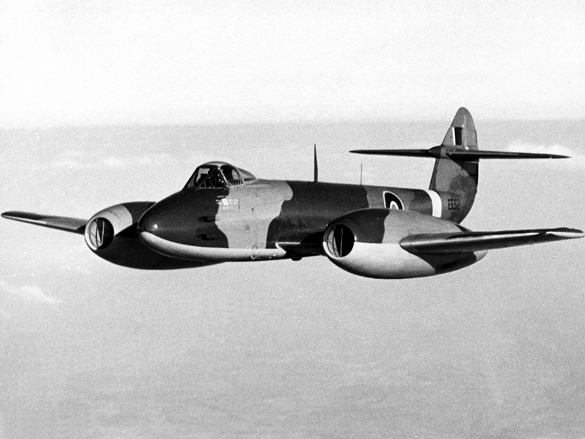
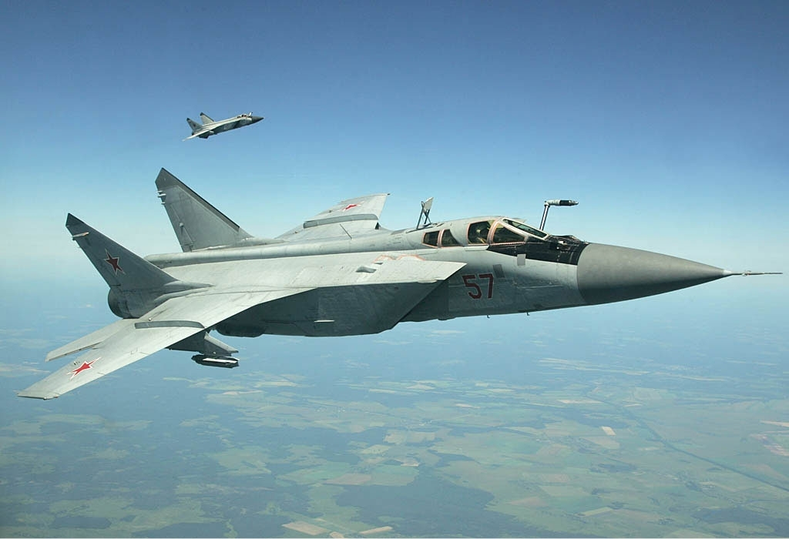

- Pierwsza generacja (1944–1953)
Pierwszą generację reprezentują maszyny pionierskie w zakresie użycia silnika turboodrzutowego jako jednostki napędowej, zapewniającej znaczne zwiększenie prędkości w porównaniu do napędu śmigłowego, którego sprawność spadała wraz ze zbliżaniem się do prędkości dźwięku. Wiele pierwszych myśliwców odrzutowych przypominało pod wieloma względami samoloty o napędzie śmigłowym, będąc konstrukcjami o prostych skrzydłach, uzbrojonych w działka i nieposiadających radaru, który był ówcześnie używany tylko na pokładach myśliwców nocnych.
Pierwsze myśliwce odrzutowe zostały opracowane pod koniec II wojny światowej i weszły do służby w jej końcowej fazie. Tylko niektóre projekty użyto bojowo przed kapitulacją Niemiec. Wytwórnia Messerschmitt zbudowała samolot Me 262, szybszy o około 100 km/h od ówczesnych myśliwców z silnikami tłokowymi. Ze względu na małe zapasy paliwa i problemy materiałowe przegrywających wojnę Niemców, maszyna ta nie odegrała znaczącej roli w walkach, mimo to jej pojawienie się wyznaczyło nowy kierunek rozwoju konstrukcji lotniczych pokazując przestarzałość maszyn napędzanych silnikami tłokowymi. W Anglii prace nad konstrukcją samolotu odrzutowego trwały już od 1940, pierwszy lot brytyjskiego samolotu Gloster Meteor zbudowanego z zakładach Gloster Aircraft odbył się w 1943, a samolot ten wszedł do służby rok później. Po zakończeniu wojny praktycznie wszystkie prace rozwojowe nad myśliwcami napędzanymi silnikami tłokowymi zostały zarzucone, chociaż przez krótki czas budowano samoloty z napędem mieszanym takie jak Ryan FR Fireball, ale konstrukcje te nie zdobyły uznania i pod koniec lat 40. właściwie wszystkie nowe samoloty bojowe były napędzane silnikami odrzutowymi.
Pomimo niezaprzeczalnych zalet, konstrukcje wczesnych myśliwców odrzutowych były dalekie od doskonałości. Charakteryzowały się one dużymi rozmiarami, delikatną konstrukcją i żywotnością silników mierzoną w godzinach. Ponadto zwiększanie obrotów musiało odbywać się bardzo powoli, aby nie dopuścić do zgaśnięcia silnika i w konsekwencji nieuniknionej katastrofy. Z tego okresu pochodzą takie rozwiązania jak skośne skrzydła, fotel wyrzucany czy usterzenie płytowe.- Niemcy
- Messerschmitt Me 262
Początki projektu pierwszego myśliwca odrzutowego sięgają 1938 roku, kiedy to Ministerstwo Lotnictwa Rzeszy złożyło w firmie Messerschmitt zamówienie na projekt samolotu napędzanego turbinami gazowymi marki BMW. Wstępny projekt płatowca oznaczonego jako P.1065 opracował dr Woldemar Voigt w kwietniu 1939 roku. Pierwotny plan był bardzo podobny do finalnego samolotu ukończonego kilka lat później. Postęp projektu był wielokrotnie opóźniany przez brak funduszy i sprzeciwy władz, zarzucające nieopłacalność nowej konstrukcji.
Podczas prac konstrukcyjnych, ze względu na wzrastającą masę projektowanego równolegle silnika, postanowiono przebudować płatowiec na maszynę o skośnych skrzydłach. Najpierw rozważano konstrukcję płatów ze skosem tylko zewnętrznych ich części, ale ostatecznie postanowiono zastosować całkowicie skośne skrzydła. Pierwszy prototyp samolotu został ukończony zanim silniki odrzutowe były gotowe, dlatego też pierwszy lot Me 262 V1 odbył się 18 kwietnia 1941 roku z konwencjonalnym silnikiem Junkers Jumo 210G o mocy 700 KM zamontowanym na dziobie maszyny. Docelowe silniki odrzutowe BMW 003 były gotowe do zamontowania w płatowcu dopiero w listopadzie, a pierwszy lot prototypu V2 z dwiema jednostkami napędowymi tego typu i dodatkowo silnikiem tłokowym Jumo 210G odbył się 25 marca 1942 roku.
Silniki samolotu były ze sprężarkami osiowymi, które w układzie wielostopniowym są sprawniejsze (większy spręż) i mają mniejszą średnicę niż sprężarka promieniowa. Dodatkowo skrzydło skośne dawało wyższą krytyczną liczbę Macha niż skrzydło proste, co pozwalało uzyskać większą prędkość na skutek niższego oporu falowego. - Arado Ar 234

Na początku wojny szybkie sukcesy odnoszone przez III Rzeszę nie skłaniały do prac nad samolotami rozpoznawczymi o napędzie odrzutowym. Dodatkowo małe zainteresowanie tymi problemami wykazywali stojący na czele Luftwaffe Ernst Udet i Hermann Göring. Ten kierunek badań nabrał impetu dzięki E. Milchowi. Pierwsze projekty maszyny o nazwie kodowej E370 stworzone pod kierunkiem dyrektora firmy Arado profesora Waltera Blume, który kierował zespołem w skład którego wchodzili m.in. inż. Hans Rabeski, Hugo Wenzel, Franz Mayer i Rüdiger Kosin, powstały na początku 1941 roku. Konstrukcja ta była odpowiedzią na złożone przez Ministerstwo Lotnictwa Rzeszy zapotrzebowanie na szybki samolot rozpoznawczy. Początkowo, ze względu na wymagany zasięg rzędu 2150 km, próbowano zmniejszyć masę maszyny poprzez zastosowanie odrzucanego podwozia, które miało postać trójkołowego wózka ze sterowanym z kabiny pilota kołem przednim i kołami głównymi wyposażonymi w hamulce hydrauliczne. Cały zespół podwozia miał być odrzucany po starcie i opadać na pięciu spadochronach. Lądowanie maszyny miało odbywać się na specjalnych płozach umieszczonych pod kadłubem i silnikami, chroniących jednocześnie jednostki napędowe przed uszkodzeniem.
Zakładano, że samolot miał latać z prędkością 780 km/h, osiągać pułap operacyjny 11 000 m i maksymalny zasięg rzędu 2000 km. Ostatecznie zasięg maszyny był nieco niższy niż planowany, ale i tak satysfakcjonował ministerstwo na tyle, że zamówiono dwa prototypy oznaczone kodem Ar 234 V1 i Ar 234 V2 (V od niem. Versuchs – prototyp). - Horten Ho 229
Samolot ten stworzono dla Luftwaffe w końcowym okresie II wojny światowej. Wyposażony był w dwa silniki odrzutowe. Samolot zdołano wyprodukować i oblatać wstępnie dopiero w styczniu 1945. Wyposażony w dwa działka 30 mm, mógł być używany jako samolot myśliwski, ponieważ jego osiągi teoretycznie przewyższały wszystkie samoloty alianckie. Jednak był to raczej pierwszy projekt Göringa z cyklu tzw. 3x1000: samolot szturmowy, bombowy o zasięgu ponad 1000 km, prędkości do 1000 km/h i nośności do 1000 kg uzbrojenia w postaci bomb lub rakiet.
Był pierwszym na świecie odrzutowym samolotem o konstrukcji latającego skrzydła. Wykonana w firmie Northrop Grumman w latach 2008–2009 pełnowymiarowa, nielatająca rekonstrukcja oraz testy elektromagnetyczne na tajnym poligonie fabrycznym Northrop wykazały, że samolot Ho 229 w 1945 byłby wykrywalny przez angielską stację radarową wczesnego wykrywania Chain Home, w odległości równej 80% odległości wykrywania myśliwca Bf-110, czyli w odległości 130 km, zamiast 160 km. Z uwagi na różnice w rozpiętości obu dolnopłatów, Ho 229 wykazał się 40-procentową powierzchnią skutecznego odbicia w porównaniu z typowym myśliwcem II wojny światowej, stanowiąc pierwszy statek powietrzny wykonany w technologii stealth. Rekonstrukcję i jej osiągi przedstawiono latem 2009 r. w filmie dokumentalnym produkcji National Geographic.
- Messerschmitt Me 262
- Stany Zjednoczone
- F-80 Shooting Star
Prace projektowe nad nowym samolotem rozpoczęły się w 1943. Napęd samolotu stanowił angielski silnik turboodrzutowy De Havilland Goblin. Pierwszy lot prototypu XP-80 odbył się 8 stycznia 1944. W trakcie prób nowego samolotu doszło do wielu wypadków. M.in. 20 października 1944 w tragicznej katastrofie drugiego prototypu zginął główny pilot Lockheeda Milo Burcham.
Shooting Star wszedł do służby na początku 1945. 45 egzemplarzy zostało dostarczonych do dywizjonów przed zakończeniem II wojny światowej. Z tego 4 egzemplarze dotarły do Europy – dwa do Włoch i dwa do Anglii. Niemniej kiedy w wypadku spowodowanym pożarem silnika zginął pilot doświadczalny major Fred Borsodi, zakazano dalszych lotów na P-80 i nie zostały one użyte bojowo do końca wojny.
Po wojnie zmniejszono początkowe zamówienie z 5000 do 2000 egzemplarzy. Do końca 1950 wyprodukowano łącznie 1715 sztuk P-80 w trzech wersjach: P-80A, B i C. Zmodyfikowany P-80B nazwany XP-80R ustanowił 19 czerwca 1947 rekord prędkości osiągając 1003,9 km/h. Produkcję ostatniej wersji P-80C rozpoczęto w 1948. W czerwcu tego roku, samolot otrzymał nowe oznaczenie – F-80C.
F-80 wzięły udział w wojnie koreańskiej, gdzie 8 listopada 1950 doszło do pierwszej w historii walki powietrznej między samolotami odrzutowymi z udziałem F-80 i MiG-a-15. Zakończyła się ona zwycięstwem pilota chińskiego. Radzieckie MiG-i o skośnych skrzydłach były konstrukcją znacznie lepszą od Shooting Starów. Już na początku wojny F-80 były wymieniane na nowsze F-86 Sabre. Po wycofaniu z roli samolotu myśliwskiego F-80 były jeszcze przez pewien czas używane jako samoloty szturmowe. - F-86 Sabre

Firma North American Aviation, znana z produkcji samolotu P-51 Mustang napędzanego silnikiem tłokowym, pod koniec wojny postanowiła podjąć wyzwanie zbudowania na zlecenie Marynarki Wojennej samolotu napędzanego silnikiem odrzutowym. Opierając się na materiałach i doświadczeniach niemieckich, przede wszystkim Kurta Tanka i jego prototypie Focke-Wulf Ta 183, oraz umiejętnościach inżynierów amerykańskich, rozpoczęto prace projektowe nad samolotem oznaczonym jako North American FJ Fury. Jednocześnie projektowano podobną maszynę dla Sił Powietrznych, która posiadała skośne skrzydła o kącie 35 stopni i automatyczne sloty.
Pierwsze projekty samolotu odrzutowego North American Aviation F-86 Sabre powstały już w 1944 roku, ale produkcja nie została rozpoczęta przed zakończeniem II wojny światowej. Prototyp oznaczony jako XP-86 i napędzany silnikiem J35-C-3 produkcji Chevroleta o ciągu 16,7 kN wzbił się w powietrze 1 października 1947 roku. Podczas lotu testowego 1 października 1947 roku samolot pilotowany przez George'a Welcha podczas płytkiego nurkowania osiągnął prędkość bliską prędkości dźwięku, a zdaniem niektórych historyków mógł ją nawet przekroczyć. Przyrządy pokładowe XP-86 nie były w stanie zarejestrować prędkości naddźwiękowej, a nieudokumentowanych jednoznacznie pomiarów dokonano z ziemi.
Zdarzenie to miało miejsce na 14 dni przed lotem Chucka Yeagera, który pokonał barierę dźwięku w pilotowanym przez siebie specjalnie do tego celu zaprojektowanym samolocie z napędem rakietowym, Bell X-1. Pierwsze oficjalnie zarejestrowane przekroczenie bariery dźwięku przez XP-86 nastąpiło dopiero 26 kwietnia 1948 roku, ale i tak stał się on pierwszym seryjnie produkowanym samolotem myśliwskim na świecie zdolnym tę prędkość osiągnąć. W później produkowanych samolotach ograniczono ze względów bezpieczeństwa prędkość maksymalną do 0,95 Macha. - F-89 Scorpion
Skonstruowany jako bezpośredni następca ciężkiego nocnego samolotu myśliwskiego z II wojny światowej P-61 Black Widow. W USAF służył od 1951 do 1957 roku, później samoloty zostały przekazane jednostkom gwardii narodowej i zastąpione przez Convair F-102 Delta Dagger. W Air National Guard samolot służył do 1968 roku.
Prototyp oznaczony jako „Projekt N-24” wytwórnia Northrop opracowała w rekordowym czasie, niewiele przekraczającym 2 lata. Pierwszy lot miał miejsce 16 sierpnia 1948 roku.
Dwumiejscowy, dwusilnikowy, wolnonośny średniopłat konstrukcji całkowicie metalowej. Kadłub o konstrukcji półskorupowej. Kabina załogi ciśnieniowa, skonstruowana w układzie tandem. Załoga składała się z pilota i operatora radaru. Samolot posiadał prosty płat o obrysie trapezu. Usterzenie było klasyczne, wolnonośne. podwozie chowane w kadłubie i skrzydłach.
- F-80 Shooting Star
- Wielka Brytania
- Gloster Meteor
Brytyjski pionier techniki napędu odrzutowego Frank Whittle rozpoczął testy skonstruowanego przez siebie silnika tego rodzaju 12 kwietnia 1937 roku. Dopiero po wybuchu drugiej wojny światowej pracami Whittle’a zainteresowało się Ministerstwa Lotnictwa. Kiedy ministerstwo złożyło zamówienie na silnik odrzutowy mający stanowić napęd samolotu doświadczalnego, Whittle nawiązał współpracę z głównym projektantem przedsiębiorstwa Gloster, George’em Carterem. Owocem tej współpracy był pierwszy brytyjski odrzutowiec – doświadczalny jednosilnikowy Gloster E.28/39 (pierwsze kołowanie 7 kwietnia 1941 roku z silnikiem W.1X, pierwszy lot 15 maja 1941 roku z silnikiem W.1). Jako że była to maszyna nadająca się wyłącznie do celów doświadczalnych (pojedynczy silnik o takim ciągu nie pozwoliłby na zainstalowanie uzbrojenia i rozwinięcie prędkości niezbędnej do odbywania lotów bojowych), Carter jeszcze przed jej oblotem zaczął prace nad koncepcją samolotu myśliwskiego napędzanego dwoma silnikami odrzutowymi umieszczonymi w gondolach w centralnych częściach obu skrzydeł. Na bazie tego projektu w listopadzie 1940 roku Ministerstwo Lotnictwa wydało dla firmy Gloster specyfikację numer F.9/40 na skonstruowanie dwusilnikowego myśliwca odrzutowego o szybkości co najmniej 692 km/h
7 lutego 1941 roku Gloster otrzymał zamówienie na dwanaście prototypowych samolotów F.9/40 o numerach od DG202 do DG213 (zamówienie następnie zmniejszono o połowę, a następnie zwiększono do ośmiu maszyn). F.9/40 pierwotnie był określany kryptonimem Rampage (Szał), następnie zaś – od września 1941 roku – Thunderbolt (Piorun), ale żeby uniknąć pomyłek z amerykańskim P-47 Thunderboltem, latem 1942 wybrano dla niego nazwę Meteor.
Pierwszy prototyp numer DG202 rozpoczął próbne kołowania już latem 1942 roku, ale pierwszy lot opóźnił się z winy przedsiębiorstwa Rover, produkującego silniki Whittle W.2B. Ostatecznie jako pierwszy wzbił się w powietrze piąty prototyp Meteor DG206 z silnikami Halford H.1 (produkcji de Havillanda) o ciągu 8,9 kN, ze sprężarką odśrodkową. Pierwszy lot nastąpił w bazie RAF Cranwell 5 marca 1943 roku z Michaelem Dauntem za sterami. Ciąg maksymalny silników Halford miał docelowo sięgać 13,3 kN i w założeniu mogły rozpędzić Meteora do prędkości ponad 800 kilometrów na godzinę. Podstawowym napędem jednak były silniki konstrukcji Whittle'a, badane w kilku odmianach. Ich rozwój ponownie nabrał tempa dzięki Rolls-Royce’owi, który przejął wydział silników odrzutowych Rovera. W rezultacie DG205 pierwszy lot z silnikami W.2B/23 odbył 12 czerwca 1943 roku, a półtora miesiąca później, 24 lipca wzniósł się w powietrze również DG202. Podczas prób w locie bardzo szybko wyszły na jaw problemy ze statecznością (odchylenia), których przyczyny upatrywano początkowo w braku śmigieł.
Silniki W.2B, produkowane przez zakłady Rolls-Royce jako Welland I, wybrano jako napęd pierwszego wariantu produkcyjnego Meteora F.Mk.1. 9 listopada 1943 oblatano DG203, wyposażony w silniki W.2/500, następnie W.2/700 (ciąg 7,5 kN). Silniki Halforda H.1 były przewidywane jako napęd wersji Mk.2, ale rozwój tego wariantu zarzucono. Silniki H.1 wprawdzie osiągały większy ciąg, lecz ich większa średnica wymagała powiększonych gondoli, których opór niwelował korzyści (zakłady de Havilland użyły następnie tego silnika dla projektowanego tam jednosilnikowego myśliwca Vampire). Prototyp DG204 (oblatany 13 listopada 1943) otrzymał silniki MetroVick F.2 ze sprężarką osiową o ciągu 8,9 kN, o mniejszej średnicy, podwieszone w gondolach pod skrzydłami, jednakże przed ich pełnym przetestowaniem uległ on katastrofie 1 kwietnia 1944. Również prototyp DG205 rozbił się 27 kwietnia 1944. O posiadaniu odrzutowców zezwolono pisać prasie brytyjskiej dopiero w styczniu 1944. - de Havilland Vampire
de Havilland Vampire – brytyjski odrzutowy myśliwiec wprowadzony do służby pod koniec II wojny światowej, opracowany przez przedsiębiorstwo de Havilland. W latach powojennych wyprodukowano 3,3 tys. egzemplarzy samolotu, które służyły w siłach powietrznych 31 krajów.
Pierwszy lot prototypu miał miejsce 20 września 1943. Samoloty pierwszej wersji produkcyjnej (Mk I) pojawiły się w kwietniu 1945, lecz nie zdążyły wziąć czynnego udziału w wojnie, osiągając gotowość bojową dopiero w 1946.
W latach powojennych samolot stał się standardowym myśliwcem RAF-u obok Glosterów Meteorów. Opracowano także wersję nocną (NF), która jednak okazała się mało udana. Vampire’a wycofano z pierwszej linii w latach 50., ostatnia wersja szkolna była używana w RAF-ie do 1966. W innych krajach samoloty typu służyły aż do lat 70. Ostatnie, należące do Rodezji, zostały wycofane ze służby w 1979 roku.
Muzeum Lotnictwa Polskiego w Krakowie znajduje się jeden de Havilland Vampire. - Hawker Hunter
Początki myśliwca Hunter są związane z samolotem pokładowym o prostych skrzydłach Hawker Sea Hawk, niezaakceptowanym przez brytyjskie wojska lotnicze (RAF), a jedynie przez lotnictwo marynarki (FAA). W celu poprawienia jego osiągów i wypełnienia wymagań Ministerstwa Lotnictwa Wielkiej Brytanii oznaczonych numerem E.38/46, główny konstruktor wytwórni Hawker Siddeley, Sydney Camm, zaprojektował prototypowy samolot oznaczony jako P.1052, który był właściwie wersją Sea Hawka ze skrzydłami skośnymi – pod kątem 35 stopni. Osiągi tego oblatanego 19 listopada 1948 samolotu były bardzo dobre i, zdaniem zarządu wytwórni Hawker Siddeley, miał on szansę po wprowadzeniu niezbędnych zmian i ulepszeń stać się myśliwcem, który mógłby być produkowany seryjnie. Korzystając z własnych środków wytwórni, przebudowano drugi egzemplarz prototypowego P.1052 na nowy samolot Hawker P.1081 ze skośnym usterzeniem ogonowym oraz zaprojektowaną na nowo tylną sekcją kadłuba i, w przeciwieństwie do Sea Hawka, nie z rozdwojoną, a pojedynczą dyszą gazów wylotowych silnika odrzutowego. Maszyna ta została oblatana 19 czerwca 1950 roku i okazała się konstrukcją na tyle obiecującą, że wzbudziła zainteresowanie Sił Powietrznych Australii. Rok po oblataniu samolot uległ jednak katastrofie, co uniemożliwiło kontynuowanie prac rozwojowych.
Tymczasem Ministerstwo Lotnictwa wydało kolejną specyfikację F.43/46 na dzienny (tj. zdolny do operowania tylko w ciągu dnia) myśliwiec przechwytujący o napędzie odrzutowym. Sydney Camm w celu sprostania nowym wymaganiom zaprojektował bazującą na pierwszym prototypie P.1052 maszynę napędzaną nowym silnikiem Rolls-Royce’a typu Avon, który – w przeciwieństwie do zastosowanego w Sea Hawku Rolls-Royce Nene – miał sprężarkę osiową, co przyczyniło się do zmniejszenia rozmiarów tego silnika, z jednoczesnym uzyskaniem większego ciągu. Początkowo maszyna miała jeden wlot powietrza w nosie i usterzenie ogonowe w kształcie litery T; później – w celu zwiększenia stabilności konstrukcji – usterzenie zmieniono, a zamiast centralnego wlotu powietrza zastosowano dwa, u nasady skrzydeł, zapewniając tym samym miejsce na uzbrojenie i radar w przedniej części kadłuba.
Pierwszy prototyp oznaczony jako P.1067 został oblatany 20 lipca 1951 roku. Napęd maszyny stanowił silnik Avon 103 o ciągu 28,91 kN taki sam jak zastosowany w bombowcu English Electric Canberra. Druga maszyna prototypowa została wyposażona w mocniejszy silnik turboodrzutowy Avon 107 o ciągu 33,58 kN, seryjną awionikę oraz uzbrojenie i oblatana 5 maja 1952. Trzecia maszyna testowa oblatana 30 listopada 1952 została próbnie wyposażona w inny silnik ze sprężarką osiową produkcji wytwórni Armstrong Siddeley Sapphire 101 o ciągu 35,59 kN.
- Gloster Meteor
- Związek radziecki
- Jak-23
Jak-23 został zaprojektowany jako prosty i lekki myśliwiec odrzutowy o dużej manewrowości, z własnej inicjatywy Aleksandra Jakowlewa w jego biurze konstrukcyjnym. Był on rozwinięciem koncepcji wcześniejszych myśliwców Jak-15 i Jak-17; powtarzając ich nieortodoksyjny redanowy układ konstrukcyjny z silnikiem odrzutowym w nosie kadłuba i dyszą wylotową pod kadłubem, lecz jego konstrukcja była całkowicie nowa. Napęd Jaka-23 stanowił brytyjski silnik turboodrzutowy Rolls-Royce Derwent V, skopiowany w ZSRR jako Klimow RD-500. Proste skrzydła o profilu laminarnym były zapożyczone z wcześniejszej konstrukcji Jak-19, zbudowanej w konwencjonalnym układzie z silnikiem w tylnej części kadłuba. Prace rozpoczęto w 1947 roku, jednocześnie biuro Jakowlewa pracowało nad myśliwcem Jak-25 zgodnym z wymaganiami Rady Ministrów z marca tego roku. Władze przemysłu lotniczego zaaprobowały jednak także do realizacji projekt Jak-23, zobowiązując biuro do dopracowania go do 30 lipca 1947.
Prototyp Jak-23 został oblatany 8 lipca 1947 (pilot Michaił Iwanow, niektóre źródła mówią o 17 czerwca). 3 sierpnia wziął udział w paradzie lotniczej w Tuszynie. Od listopada 1947 do marca 1948 przeszedł próby państwowe. Samolot oceniono jako wysoce manewrowy, dysponujący dużym przyspieszeniem i prędkością wznoszenia oraz dobrymi charakterystykami startu i lądowania, dzięki lekkiej konstrukcji, dającej przy mocnym silniku wysoki stosunek ciągu do masy. Był on szybszy od wcześniejszych myśliwców Jakowlewa i od MiG-9 (podczas prób uzyskał 932 km/h). Samolot mógł bazować z lotnisk gruntowych. Wadami była słaba stabilizacja podłużna w locie z maksymalnymi prędkościami (ok. 0,86 Ma), podnoszenie nosa samolotu przy gwałtownym zwiększaniu ciągu (wynikające z odchylenia osi silnika w dół) oraz brak hamulców aerodynamicznych. Brak hermetyzowanej kabiny ograniczał jego praktyczne zastosowanie na większych wysokościach. 14 lipca 1948 drugi prototyp uległ katastrofie (prawdopodobnie spowodowanej kolizją), w której zginął oblatywacz Michaił Iwanow. Mimo wdrożenia w tym samym czasie produkcji myśliwców nowej generacji ze skośnymi skrzydłami (MiG-15 i Ła-15), Jak-23 również został pod koniec roku 1948 zaakceptowany przez władze do produkcji seryjnej, jako lekki myśliwiec do walki na mniejszych wysokościach. Wygrał przy tym w konkurencji z przewidzianym jako podstawowy projekt Jakowlewa myśliwcem Jak-25 (pierwszym o tej nazwie), o klasycznym układzie konstrukcyjnym, z silnikiem odrzutowym RD-500 w tylnej części kadłuba i prostymi skrzydłami, mimo jego lepszych osiągów.
Z uwagi na opóźnienia z silnikami, pierwsze samoloty seryjne Jak-23 zbudowano w fabryce nr 31 w Tbilisi dopiero w październiku 1949. Ponieważ jednak Jak-23 nieporównanie ustępował nowym myśliwcom ze skośnymi skrzydłami, produkcję wstrzymano w 1950 po zbudowaniu 310 samolotów.
Oprócz myśliwca opracowano w 1949 dwumiejscowy samolot szkolno-treningowy Jak-23UTI (lub UTI Jak-23), z drugą kabiną zabudowaną przed dotychczasową kabiną, osłoniętą wspólną osłoną. W ostatecznej wersji kadłub był przedłużony o 20 cm, a druga kabina – instruktora miała nieco podwyższoną wypukłą osłonę. Uzbrojenie stanowił jeden wkm 12,7 mm UBS. Publikacje są rozbieżne na temat, czy zbudowano małą serię tych samolotów, czy też nie wyszedł on poza stadium prototypu w związku z zakończeniem produkcji Jaka-23 (według nowszych publikacji, pozostał jedynie prototypem).
Oprócz ZSRR, prototyp samolotu szkolno-treningowego Jak-23DC opracowała w 1956 roku Rumunia, przebudowany z jednomiejscowego. Miał on dodatkową kabinę instruktora zamontowaną za dotychczasową, w miejscu zbiornika paliwa, nie posiadał uzbrojenia. Nie był budowany w większej ilości. - Mig-15
W 1947 biuro Mikojana i Guriewicza zaprojektowało płatowiec myśliwca oznaczony jako I-310 („I” od istriebitiel – myśliwiec), przy którym wykorzystano osiągnięcia inżynierów niemieckich, głównie rozwiązania zastosowane przez Kurta Tanka w prototypie Focke-Wulf Ta 183. Brakowało jednak w Związku Radzieckim silnika odpowiedniego dla tej nowej maszyny. Problem ten rozwiązano, gdy rząd brytyjski udostępnił ZSRR nowy silnik turboodrzutowy Rolls-Royce Nene Mk. I. Silnik skopiowano i oznaczono Klimow RD-45. Trzeci prototyp z nowym silnikiem wzbił się w powietrze 30 grudnia 1947. Nowy typ maszyn pod oznaczeniem MiG-15 wszedł do służby w czerwcu 1949.
MiG-15 jest to jednomiejscowy (wersje MiG-15 UTI i jego odpowiedniki były dwumiejscowe) średniopłat o konstrukcji półskorupowej. Węzły wykonano ze stali 30ChGSA a pozostałe elementy płatowca z duraluminium D16T. Kadłub jest rozdzielany na część przednią i tylną pomiędzy wręgami 13 i 14, dzięki czemu możliwa jest łatwa i szybka naprawa lub wymiana silnika. Wzdłuż przedniej części kadłuba przechodzą dwa kanały prowadzące powietrze do silnika. W części kadłuba mieszczącej kabinę pilota i wnękę przedniego podwozia kanał powietrzny rozdziela się na boki. W tylnej części kadłuba znajduje się silnik wraz z osprzętem.
Kabina pilota jest ciśnieniowa, wentylowana i w razie potrzeby ogrzewana powietrzem z silnika. Wyposażona jest w napędzany prochowo fotel katapultowy, którego zagłówek i oparcie są opancerzone. Minimalna wysokość lotu samolotu podczas katapultowania wynosi 250–300 m. Osłona kabiny odsuwana jest do tyłu, przednia szyba kabiny wykonana ze szkła pancernego o grubości 64 mm.
Skrzydła samolotu mają skos 35° do środka parcia i +57° do krawędzi natarcia, wznios skrzydeł jest ujemny –2°. Skrzydła mają konstrukcję półskorupową jednodźwigarową z dźwigarem skośnym i pomocniczym. Na końcach skrzydeł umieszczono zmniejszający drgania balast o masie 26 kg. Na górnej powierzchni skrzydeł znajdują się prowadnice aerodynamiczne o wysokości 10 cm, ustawione po dwie na każdym skrzydle – równolegle do osi podłużnej samolotu. Na dolnej powierzchni znajdują się wnęki podwozia głównego i węzły do podwieszania uzbrojenia i dodatkowych zbiorników paliwa. Skrzydła wyposażone są w klapy oraz lotki.
Statecznik pionowy pojedynczy o skosie 56° ma powierzchnię 3 m² w tym ster kierunku 1 m². Statecznik poziomy mocowany jest do statecznika pionowego ponad kadłubem, powierzchnia 3 m² w tym 0,79 m² ster wysokości. Sterowanie samolotem odbywa się za pomocą sztywnych drążków i popychaczy z kompensacją wagową, sterowanie trymera – elektryczne. - Mig-17
Samolot powstał w 1949, a pierwszy prototyp oblatano w 1950. Stanowił on rozwinięcie myśliwca MiG-15. Pierwszą wersją produkcyjną był różniący się od prototypu silnikiem MiG-17F, następnie wprowadzono wersje przechwytujące wyposażone w radar – MiG-17PF oraz w radar i możliwość przenoszenia pocisków naprowadzanych radarowo – MiG-17PFU. Od 1956 produkowano go również w Polsce jako Lim-5 (od „licencyjny myśliwiec”). Produkowano również MiG-17PF jako Lim-5P. W 1963 polscy inżynierowie opracowali wersję rozwojową Lim-6bis wyposażoną w wysięgniki na dodatkowe, podwieszane uzbrojenie oraz spadochron hamujący. Zmieniło się również przeznaczenie – nowa maszyna miała pełnić funkcję samolotu szturmowego. Na jego bazie powstała wersja rozpoznawcza Lim-6bisR. Limy-6 powstałe w wyniku przebudowy Limów-5P otrzymały oznaczenie Lim-6M. Samoloty eksportowane do Chin otrzymały oznaczenie J-4, zaś produkowane w Chinach J-5. Chińczycy opracowali również wersję dwumiejscową JJ-5 eksportowaną do innych krajów pod oznaczeniem FT-5.
Samolot był myśliwcem poddźwiękowym, jednakże w locie nurkowym, z użyciem dopalacza udawało się przekroczyć prędkość dźwięku (1 Ma). Z powodu silnych drgań w zakresie prędkości okołodźwiękowych wprowadzono pewne ograniczenia i loty z prędkością ponad 1 Ma praktycznie nie były wykonywane.
Jednomiejscowy (poza chińską wersją JJ-5), jednosilnikowy średniopłat o konstrukcji całkowicie metalowej (duraluminium) i skośnych skrzydłach. Skrzydła o zmiennym skosie krawędzi natarcia, przy kadłubie 45°, dalej 42°, o profilu laminarnym, wielodźwigarowe. Na każdym ze skrzydeł trzy kierownice strug powietrza. Na tylnej krawędzi klapy i lotki. Usterzenie klasyczne, skośne (pionowe – o kącie skosu 56°). Usterzenie poziome zamocowane powyżej połowy wysokości pionowego. Kadłub o konstrukcji półskorupowej. W części przedniej wlot powietrza do silnika, rozdzielający się pionową przegrodą na dwa kanały wzdłuż burt. Kabina pilota hermetyzowana, typu wentylowanego, w przedniej części kadłuba. Kilkuczęściowa oszklona osłona o kształcie kroplowym, dzieląca się na stały wiatrochron i osłonę odsuwaną do tyłu. Kabina wyposażona w fotel wyrzucany (minimalna wysokość do katapultowania 250 m). Silnik odrzutowy w tylnej części kadłuba. Po obu stronach tylnej części kadłuba hamulce aerodynamiczne o łącznej powierzchni 0,98 m². Podwozie samolotu trójkołowe, z pojedynczymi kołami; golenie główne wciągane w skrzydła, w stronę kadłuba, rozstaw kół 3,849 m.
Napęd stanowił jeden silnik turboodrzutowy ze sprężarką odśrodkową WK-1F o ciągu 33,1 kN z dopalaczem, 25,5 kN bez dopalania. Paliwo w dwóch zbiornikach w kadłubie o pojemności łącznie 1415 l. Z reguły podwieszano dwa dodatkowe zbiorniki paliwa pod skrzydłami o pojemności po 400 l.
- Jak-23
- Niemcy
- Dróga generacja (1953–1960)
Druga generacja to samoloty, w których użyto wielu ówcześnie najnowocześniejszych technologii, a najważniejszą z nich było zastosowanie kierowanych pocisków rakietowych powietrze-powietrze takich jak AIM-9 Sidewinder i AIM-7 Sparrow, co w połączeniu z radarem stanowiącym już standardowe wyposażenie wydłużyło dystans prowadzenia walk powietrznych nawet poza zasięg wzroku. Konstruktorzy eksperymentowali z różnymi kształtami skrzydeł od skośnych, w kształcie delty, czy ze zmienną geometrią, oraz konstrukcją kadłubów zgodnie z regułą pól. Samoloty ze skośnymi skrzydłami stały się pierwszymi seryjnie budowanymi maszynami zdolnymi przekraczać barierę dźwięku. W późniejszych konstrukcjach drugiej generacji, jak MiG-21 czy F-4 Phantom, wprowadzono regulowane wloty powietrza, które miały zapewniać lepsze osiągi przy naddźwiękowych prędkościach. Stożek w MiG-21 miał taki kształt i mógł się wysuwać tak, aby tworząca się na nim fala uderzeniowa odbijała się wewnątrz wlotu, zwalniała przepływ i zwiększała jego ciśnienie przy małych stratach. Skrzydła delta dzięki swojemu kształtowi zapewniały lepszą wytrzymałość i mogły być cieńsze niż wcześniejsze skrzydła skośne (jak np. w MiG-19).
W tym okresie pojawiła się pierwsza specjalizacja maszyn do wykonywania określonych zadań, myśliwsko-bombowych takich jak F-105 Thunderchief i Su-7, oraz przechwytywania (myśliwiec przechwytujący) takich jak English Electric Lightning i F-104 Starfighter. Myśliwce przechwytujące były wyspecjalizowanymi maszynami, w których po raz pierwszy zrezygnowano z uzbrojenia strzeleckiego na korzyść pocisków rakietowych zdolnych razić cele z dużych odległości. W rezultacie otrzymano samolot charakteryzujący się dużym udźwigiem uzbrojenia, radarem dalekiego zasięgu, oraz dużymi prędkościami: maksymalną oraz wznoszenia kosztem zwrotności.- Stany Zjednoczone
- F-100 Super Sabre
Początkowo F-100 miał być odmianą F-86 zdolną do lotu z prędkością naddźwiękową. Jednak testy modelu w tunelu aerodynamicznym wykazały, że konstrukcja F-86 nie zachowuje się stabilnie w locie naddźwiękowym, nawet mimo zwiększenia skosu skrzydeł do 45 stopni. Oznaczało to konieczność opracowania całkowicie nowego myśliwca.
Podstawą stały się studyjne wersje F-86 znane jako "Advanced F-86D" i "Advanced F-86E". Opracowany prototyp nazwano "Sabre 45", a USAF zdecydowało o zakupieniu 2 egz. do testów. Jednak wybuch wojny w Korei sprawił, że potrzeba posiadania naddźwiękowego myśliwca stała się nagląca i prace zdecydowanie przyspieszono. Zaowocowało opracowaniem wersji YF-100, która po wprowadzeniu poprawek, których zażądało USA, przekształcona została w YF-100A.
Pierwszy lot prototypu miał miejsce 25 maja 1953 roku. YF-100A przekroczył już podczas tego pierwszego lotu barierę dźwięku. Jako pokaz możliwości nowego samolotu podpułkownik USA Everest ustanowił w nim rekord prędkości osiągając 1 219.48 km/h.
Pierwotnym zastosowaniem F-100 było wywalczanie przewagi w powietrzu. Jednak podczas wprowadzania do eksploatacji wersji F-100A Super Sabre USA zgłosiło potrzebę wyposażenia samolotu w zdolność do atakowania celów naziemnych i przekształcenia go w myśliwiec uderzeniowy. Zmodyfikowano w ten sposób ostatnie 70 samolotów serii A nadając im nowe oznaczenie F-100 C.
Seria wypadków, jakim ulegały F-100 zaraz po wprowadzeniu do służby, spowodowana była wadliwą konstrukcją usterzenia ogonowego. Problemem było wchodzenie samolotu w głębokie przeciągniecie, które na niskiej wysokości prowadziło do katastrofy. Wadę szybko usunięto, przywracając oryginalną konstrukcję usterzenia z modelu "YF-100A". Skutkiem tych wypadków była jednak zła opinia, jaką F-100 uzyskał wśród pilotów. Kariera F-100 A w USAF była bardzo krótka. Zakończono wprowadzanie ich do służby w 1955 a wycofano już w 1959. Przekazane zostały do jednostek Air National Guard i do Sił Powietrznych Tajwanu. Nadal jednak miały opinie samolotu "feralnego". Nie działo się to bez powodu, w różnych wypadkach utracono bowiem prawie 50% wyprodukowanych F-100 A. - F-4 Phantom II
F-4 Phantom II został zaprojektowany jako myśliwiec obrony floty dla amerykańskiej marynarki wojennej i wprowadzony do służby w 1960 roku. W 1963 w jego posiadanie weszły również Siły Powietrzne Stanów Zjednoczonych (USAF), które zaadaptowały go do roli samolotu myśliwsko-bombowego. Do zakończenia produkcji w 1981 roku wytwórnię opuściło 5195 maszyn, co uczyniło z Phantoma najliczniej budowany amerykański naddźwiękowy samolot wojskowy. Do momentu wdrożenia kolejnej maszyny wytwórni McDonnell Douglas myśliwca F-15 Eagle dzierżył on również rekord najdłużej wytwarzanego samolotu myśliwskiego, pozostając w produkcji przez 24 lata. Innowacyjnymi rozwiązaniami zastosowanymi po raz pierwszy w samolotach wojskowych był impulsowy radar dopplerowski i szerokie wykorzystanie tytanu do budowy kadłuba.
Mimo pokaźnych rozmiarów i dużej maksymalnej masy startowej, wynoszącej 27 000 kg, F-4 Phantom II mógł osiągać prędkość maksymalną 2,23 Ma oraz prędkość wznoszenia 210 m/s. Krótko po ich wprowadzeniu do służby, na samolotach F-4 Phantom II ustanowiono 16 rekordów świata włącznie z rekordem prędkości wynoszącym 2585,086 km/h i rekordem pułapu wynoszącym 30 040 m. Pięć z ustanowionych w latach 1959-1962 rekordów prędkości zostało niepobitych aż do 1975.
F-4 Phantom II mógł przenosić na dziewięciu węzłach uzbrojenia pod kadłubem i skrzydłami do 8480 kg uzbrojenia w postaci kierowanych i niekierowanych pocisków rakietowych do niszczenia celów powietrznych i naziemnych, oraz broni jądrowej. Po wprowadzeniu do służby przeznaczonego do walk na krótkich dystansach myśliwca Chance-Vought F-8 Crusader, którego podstawowym uzbrojeniem były działka 20 mm Colt Mk 12, zdecydowano, że zgodnie z ówczesną tendencją F-4 Phantom II jako myśliwiec przechwytujący będzie uzbrojony jedynie w pociski rakietowe i pozbawiony uzbrojenia strzeleckiego. Podczas walk nad Północnym Wietnamem Phantomy dowiodły swej wartości i wkrótce przyjęto je na uzbrojenia USAF jako myśliwce przewagi powietrznej. Duża powierzchnia skrzydeł maszyny oraz mocne silniki pozwalały na uzyskanie osiągów porównywalnych do znacznie mniejszych i zwrotniejszych myśliwców MiG, ale największą przewagę zapewniała asysta oficera pokładowego odpowiedzialnego za wykrywanie i namierzanie maszyn wroga zarówno przy pomocy radaru, jak i wzrokowo.
Ze względu na wykorzystanie przez siły powietrzne wielu krajów i bardzo charakterystyczną sylwetkę F-4 Phantom stał się jedną z najbardziej rozpoznawalnych maszyn zimnej wojny. Wykorzystywane podczas wojny w Wietnamie i konfliktu izraelsko-palestyńskiego Phantomy odniosły 393 zwycięstwa powietrzne i wypełniły bardzo wiele zadań przeciwko celom naziemnym. F-4 Phantom był ostatnim amerykańskim myśliwcem, na którym osiągnięto status asa myśliwskiego w XX wieku. Podczas wojny wietnamskiej USAF i US Navy posiadały po jednej załodze, która mogła się poszczycić zestrzeleniem 5 lub więcej wrogich maszyn podczas walki powietrznej. Maszyny te były także zdolne do wykonywania zadań rozpoznania taktycznego i misji Wild Weasel SEAD (Suppression of Enemy Air Defences – tłumienia obrony powietrznej wroga), które wypełniały ostatni raz w 1991 roku podczas operacji Pustynna Burza.
F-4 Phantom II był także jedynym samolotem wykorzystywanym od 1969 roku przez oba amerykańskie wojskowe zespoły akrobacyjne. Zespół Sił Powietrznych Stanów Zjednoczonych Thunderbirds latał przez pięć sezonów na maszynach wersji F-4E, a Blue Angels Marynarki Wojennej o jeden sezon dłużej na wersji F-4J.
Wypróbowane na Phantomie podstawowe założenia myśliwców dalekiego zasięgu, zdolnych latać z prędkościami Ma > 2 i przenosić duży ładunek bomb, doprowadziły do powstania kolejnej generacji lekkich i średnich myśliwców zoptymalizowanych do działań w czasie dnia. W siłach powietrznych zostały one zastąpione przez myśliwce F-15 Eagle i F-16 Fighting Falcon, a w marynarce przez F-14 Tomcat i F/A-18 Hornet. W roli średniego bombowca Phantom został zastąpiony przez maszyny General Dynamics F-111. - F-5 Freedom Fighter
W 1955 rozpoczęto w firmie Northrop opracowywanie lekkiego i taniego myśliwca, prostego w obsłudze i zdolnego startować z krótkich pasów startowych, utwardzonych lotnisk polowych, a także małych lotniskowców. Rynkiem docelowym dla nowej maszyny miały być kraje NATO i SEATO potrzebujące właśnie takiego samolotu. Samolot prototypowy nosił oznaczenie N-156F, a drugi egzemplarz w wersji dwumiejscowej – N-156T; wyewoluował on później w odrębny projekt samolotu szkolno-treningowego T-38 Talon. Ze względu na inne oczekiwania zarówno amerykańskich sił powietrznych, potrzebujących lekkiego myśliwca, jak i wojsk lądowych, potrzebujących samolotu wsparcia, żadna z tych formacji nie zainteresowała się nowym produktem.
Projekt myśliwca firmy Northrop został uratowany dzięki programowi pomocy militarnej Military Assistance Program (MAP), dla krajów słabiej rozwiniętych, realizowanego przez rząd Stanów Zjednoczonych za czasów prezydenta Kennedy’ego. Najbliższy wymaganiom programu samolot N-156F trafił do produkcji w 1962 roku pod nazwą F-5A Freedom Fighter. Pierwsze zamówienie zagraniczne dla Sił Powietrznych Norwegii złożono w 1964 roku, a dostawy rozpoczęto w roku 1965.
W służbie na całym świecie wciąż pozostaje wiele samolotów F-5 w różnych wersjach, wielokrotnie modernizowanych i unowocześnianych. Najnowocześniejsze singapurskie jednomiejscowe F-5S i dwumiejscowe F-5T wyposażono w nowy radar produkcji izraelskiej, wielofunkcyjne wyświetlacze LCD i możliwość używania pocisków rakietowych Rafael Python i AIM-120 AMRAAM klasy powietrze-powietrze.
Także w Stanach Zjednoczonych, chociaż nie są one używane bojowo, zaadaptowano je do roli „agresora” udającego podczas ćwiczeń radzieckie samoloty MiG-21 ze względu na podobne do nich osiągi. USAF wykorzystywały F-5 w tej roli od 1975 do 1990, marynarka nadal lata na F-5N/F.
Uznawany za nową maszynę T-38 Talon zbudowany na platformie F-5 został przyjęty przez Siły Powietrzne USA jako samolot szkolno-treningowy służący do szkolenia pilotów do lotów z prędkościami naddźwiękowymi. Zbudowano również wersję rozwojową samolotu mającą konkurować na rynkach zachodnich z F-16 Fighting Falcon, oznaczoną początkowo jako F-5G, a docelowo F-20 Tigershark. Również od F-5 wyewoluował YF-17 Cobra, pierwowzór F/A-18 Hornet. Przedniej części samolotu F-5 użyto do skonstruowania eksperymentalnego Grummana X-29. - Wielka Brytania
- Gloster Javelin
Na początku 1947 roku brytyjskie Ministerstwo Lotnictwa wydało specyfikacje na skonstruowanie nowego dziennego myśliwca przechwytującego o wysokich osiągach (F.43/46) i myśliwca nocnego (F.44/46). Wśród firm, które podjęły prace konstrukcyjne, był Gloster (producent pierwszego brytyjskiego myśliwca odrzutowego Gloster Meteor). Początkowo firma ta skoncentrowała się na dziennym myśliwcu przechwytującym, proponując projekt samolotu P.234 w nowym wówczas układzie delta, którego głównym projektantem był Richard Walker. Projekt został uznany za obiecujący i wybrano go do dalszych prac. Zmieniające się wymagania spowodowały opracowanie dalszych projektów P.248 i P.250, w końcu P.259, który wprowadził układ dwumiejscowy i przewidywane uzbrojenie w pociski kierowane. Na myśliwiec nocny Gloster początkowo zaproponował projekt P.228 wywodzący się z Meteora, który jednak nie zyskał uznania. W styczniu 1948 roku Ministerstwo Lotnictwa zdecydowało wybrać jako myśliwiec dzienny samolot zakładów Hawker (późniejszy Hawker Hunter), a samolot Glostera rozpatrzyć pod kątem wymagań na myśliwiec nocny. Dalej rozwijany projekt Glostera, według zmienionej specyfikacji na myśliwiec nocny F.4/48, nosił oznaczenia P.272, P.276 i ostatecznie P.280. Konkurował on o zamówienie z samolotem DH.110 (późniejszy Sea Vixen), który początkowo był preferowaną konstrukcją, lecz ostatecznie zamówiło go tylko lotnictwo marynarki. Budowę prototypów zamówiono w kwietniu 1949 roku.
Pierwszy prototyp samolotu o oznaczeniu fabrycznym Gloster G.A.5 (numer seryjny WD804) oblatano 26 listopada 1951 roku. Został on jednak zniszczony 29 czerwca 1952 roku przy awaryjnym lądowaniu (pilot Bill Waterton otrzymał za lądowanie i uratowanie tym samym aparatury pomiarowej Medal Jerzego). 7 czerwca 1952 roku, jeszcze przed zbudowaniem dalszych prototypów, lotnictwo brytyjskie zamówiło pierwsze 200 samolotów, które otrzymały nazwę Javelin (pol. oszczep). Drugi prototyp WD808, oblatany 20 sierpnia 1952 roku, rozbił się jednak wraz z pilotem 11 czerwca 1953 roku. Przyczyną było przeciągnięcie przy dużym kącie natarcia, gdy ster wysokości znalazł się w cieniu aerodynamicznym skrzydła (było to cechą charakterystyczną przyjętego układu płatowca, ze sterem wysokości umieszczonym w układzie T na szczycie statecznika, i dalsze badania w locie skupiały się między innymi na zapobieganiu ryzyka takich sytuacji). Zbudowano ogółem 6 prototypów wersji myśliwskiej. W nocy z 4 na 5 lipca 1954 roku Javelin przekroczył prędkość dźwięku w płytkim locie nurkowym nad Londynem, demonstrując możliwości konstrukcji i wywołując grom dźwiękowy (samolot nie był mimo to zdolny do przekraczania prędkości dźwięku w locie poziomym).
Proponowanym rozwinięciem samolotu był ponaddźwiękowy P.356 Gloster G.A.6 Thin Wing Javelin (Javelin o cienkich skrzydłach) z 1953 roku, następnie P.376 z roku 1955, który miał rozwijać prędkość Ma 1,82. Pomimo zamówienia prototypu w 1954 roku i serii próbnej 18 sztuk, program został 31 maja 1956 roku anulowany przed ukończeniem prototypu, z powodu mimo wszystko niewystarczających osiągów do przechwytywania perspektywicznych bombowców o prędkości ponad Ma 2, oraz istnienia bardziej zaawansowanego programu kanadyjskiego Avro Canada CF-105 Arrow (ostatecznie również anulowanego). - de Havilland Sea Vixen
Samolot de Havilland DH.110 początkowo projektowany był na zamówienie zarówno lotnictwa brytyjskiego (Royal Air Force – RAF) z 1947, jak i lotnictwa brytyjskiej marynarki wojennej (Fleet Air Arm – FAA) jako dwumiejscowy myśliwiec przechwytujący zdolny do operowania w każdych warunkach atmosferycznych. Samolot był zaprojektowany w takim samym nieortodoksyjnym układzie dwubelkowym, co wcześniejsze de Havilland Vampire i de Havilland Venom (którego wersję morską Sea Venom nowy samolot później zastąpił w lotnictwie marynarki).
Pierwszy prototyp DH.110 został oblatany 26 września 1951 (numer WG536), a 20 lutego 1952 pokonał barierę dźwięku. Prototyp ten jednak rozbił się jednak 6 września 1952 roku podczas Farnborough Airshow. Samolot rozpadł się w powietrzu, w locie z prędkością okołodźwiękową, a jego szczątki zabiły dwadzieścia dziewięć osób na ziemi. Śmierć ponieśli też obaj członkowie załogi: pilot John Derry i nawigator Tony Richards. Na skutek katastrofy, drugi prototyp (numer WG240) został wzmocniony i zmodyfikowany. RAF jednak ostatecznie wybrał konkurencyjny projekt Gloster Javelin, jako tańszy i prostszy samolot. Prace nad samolotem, nazwanym Sea Vixen dla wyróżnienia wersji morskiej, kontynuowano jednak na zlecenie FAA. Miał on tym razem przenosić kierowane pociski rakietowe.
20 czerwca 1955 oblatano trzeci prototyp DH.110 Mk.20X, który miał posłużyć jako wzorzec morskiej wersji produkcyjnej, lecz jeszcze nie posiadał składanych skrzydeł. W kwietniu 1956 prowadzono jego próby morskie, między innymi po raz pierwszy samolot wylądował na pokładzie lotniskowca HMS "Ark Royal" z użyciem lin hamujących. Próby były udane i lotnictwo marynarki wojennej zamówiło samolot. 20 marca 1957 oblatano pierwszy samolot wersji seryjnej, Sea Vixen FAW.20 (Fighter All Weather, myśliwiec na każde warunki pogodowe), przemianowanej następnie na FAW.1 (FAW Mk 1). Zbudowano 114 samolotów wersji FAW.1 - English Electric Lightning
Prace nad pierwowzorem Lightninga – eksperymentalnym samolotem P.1, rozpoczęto w nowo utworzonym biurze konstrukcyjnym zakładów English Electric (EE) już w 1947 roku, w odpowiedzi na złożone w tym roku zapotrzebowanie eksperymentalne nr 103 (ER.103) brytyjskiego Ministerstwa Zaopatrzenia (Ministry of Supply), na ponaddźwiękowy samolot doświadczalny. W 1949 roku powstał projekt samolotu. Drugim konkurentem był doświadczalny rekordowy Fairey FD.2, jednak w odróżnieniu od niego zespół English Electric przewidywał od razu możliwość rozwoju swojego samolotu jako myśliwca. Dzięki temu, spełniał on większość ogłoszonych latem 1949 wymagań ministerstwa nr F.23/49 na ponaddźwiękowy samolot myśliwski. Prace rozpoczęto pod kierunkiem głównego konstruktora W.E.W. Pettera, lecz projekt wkrótce przejął jego następca Frederick Page. 1 kwietnia 1950 zakłady otrzymały zamówienie na budowę dwóch prototypów oraz płatowca do prób statycznych. W projektowaniu wykorzystano wyniki prób skrzydeł o różnych kątach skosu oraz różnych konfiguracji sterów wysokości, prowadzonych na samolocie doświadczalnym Short SB.5, zamówionym na potrzeby badań przez Royal Aircraft Establishment (Królewski Instytut Statków Powietrznych) i oblatanym 2 grudnia 1952. Próby te wykazały słuszność koncepcji EE, żeby umieścić stery wysokości nisko, zamiast na szczycie usterzenia, co forsowało RAE.
Pierwszy doświadczalny samolot English Electric o oznaczeniu P.1A (nr WG 760) został oblatany w bazie Boscombe Down 4 sierpnia 1954 (pilot Roland Beamont). Charakteryzował się nieortodoksyjnym układem dwóch silników odrzutowych umieszczonych w kadłubie jeden nad drugim, z dyszami obu silników na końcu kadłuba. Drugą nietypową cechą były skrzydła o dużym skosie 60°, z końcówkami ściętymi prostopadle do kadłuba, na których znajdowały się lotki (przypominały one skrzydło delta, lecz z wyciętym trójkątem w tylnej części przykadłubowej). Charakterystyczną sylwetkę tworzyły ponadto nisko umieszczone w dolnej części kadłuba stery wysokości o kształcie powtarzającym kształt skrzydeł. Cechy te przetrwały w późniejszym Lightningu. Samolot P.1A miał centralny nieregulowany owalny wlot powietrza w nosie kadłuba. Napęd stanowiły silniki Armstrong Siddeley Sapphire Sa.5 o ciągu 35,6 kN (3639 kg). 11 sierpnia 1954, w trzecim locie, przekroczył on prędkość dźwięku w locie poziomym, jako pierwszy samolot brytyjski. Drugi prototyp (WG 763), oblatany 18 lipca 1955, otrzymał wersję silników z dopalaczem, o ciągu 44.54 kN (4540 kg) i uzbrojenie w działka.
Na bazie samolotu doświadczalnego P.1A opracowano prototyp myśliwca P.1B, oblatany 4 kwietnia 1957 (pilot R. Beamont). Zmieniono w nim nos kadłuba, stosując naddźwiękowy wlot powietrza z ruchomym centralnym stożkiem, dostosowującym podczas lotu geometrię wlotu silnika do liczby Macha, i mieszczącym w samolotach seryjnych stację radiolokacyjną. Napęd stanowiły 2 mocniejsze silniki Rolls-Royce Avon 24R z dopalaczami o ciągu 64,2 kN (6545 kg). Kabinę pilota umieszczono wyżej, dla lepszej widoczności, a za nią na kadłubie pojawił się wąski garb, ciągnący się do usterzenia i mieszczący część urządzeń. Oprócz trzech prototypów P.1B (XA 847, 853, 856), zbudowano w latach 1958-1959 partię 20 samolotów przedseryjnych (po raz pierwszy w brytyjskiej praktyce), z których pierwszy oblatano 3 kwietnia 1958. Na samolotach P.1B prowadzono próby w locie i badano różne systemy, w tym uzbrojenie, oraz mały podkadłubowy konforemny (przylegający do kadłuba) dodatkowy zbiornik paliwa o pojemności 1136 l (250 galonów). W toku prób powiększono o 30% powierzchnię trójkątnego statecznika pionowego ze sterem kierunku. Jako jedyny z nowo projektowanych brytyjskich myśliwców, z uwagi na stopień zaawansowania, program P.1B uniknął likwidacji podczas cięć budżetowych związanych z przejściem na technikę rakietową w 1957 (tzw. Biała Księga Obrony), chociaż zmniejszono skalę zamówień. 23 października 1958 samolot otrzymał wojskową nazwę Lightning (ang. błyskawica; rozważano też m.in. nazwę Excalibur). 25 listopada 1958 prototyp P.1B jako pierwszy brytyjski samolot przekroczył dwukrotną prędkość dźwięku. - Związek Radziecki
- MiG-19
W latach 50. w biurze konstrukcyjnym A. Mikojana i M. Guriewicza opracowano nowy samolot myśliwski, zdolny do wykonywania zadań w nocy oraz w trudnych warunkach atmosferycznych. Otrzymał on oznaczenie I-360. Przedprototypem samolotu był SM-2 (oblatany w 1952 r.). Samolot miał 2 silniki AM-5. Jednak ich mały ciąg, uniemożliwiający przekroczenie bariery dźwięku spowodował, że wymieniono je na dwa silniki AM-9. Prototypem MiGa-19 stał się samolot SM-9. Badania MiGa-19 w locie trwały do 1955 r. Ulepszeniem silników zajmował się S. Tumanski, tworząc nowe silniki RD-9.
W roku 1956 samolot pod nazwą SM-30 został dostosowany do startu z wyrzutni. W tym celu dodano mu odrzucany silnik rakietowy na paliwo stałe. Samolot miał zwalczać samoloty zwiadowcze U-2 przekraczające granice państw Układu Warszawskiego. Samolot, jako pierwszy z serii MiG-ów miał kadłub zbudowany zgodnie z regułą pól, co poprawiało własności samolotu w locie z prędkością okołodźwiękową i ułatwiało przekroczenie Ma=1. Ze względu na znacznie wyższe od MiGów-15/17 koszty produkcji, MiG-19 był wytwarzany w ZSRR w ograniczonej liczbie (~2200 sztuk), a tworzenie kolejnych wersji wstrzymano wobec dobrze rokujących projektów szybszych myśliwców Su-9 i MiG-21. Kompletne oprzyrządowanie produkcji sprzedano w 1959 r. do Chin, gdzie samolot ten utrzymał się w produkcji jako Shenyang J-6 (oznaczenie eksportowe F-6) do roku 1981. Oprócz Chin produkcję licencyjną na niewielką skalę (103 samoloty dla potrzeb własnych) podjęła Czechosłowacja.
Samoloty MiG-19 oraz J-6/F-6 używane były w krajach Układu Warszawskiego: ZSRR, Bułgarii, Czechosłowacji, NRD, Polsce, Rumunii i na Węgrzech oraz w Afganistanie, Albanii, Algierii, Bangladeszu, Birmie, Chinach, Egipcie, Indonezji, Iraku, Iranie, Kambodży, Kongo, Korei Północnej, Pakistanie, Somalii, Sri Lance, Sudanie, Syrii, Tanzanii, Ugandzie, Wietnamie, Zambii i na Kubie.
Wielkość chińskiej produkcji samolotów J-6/F-6 oceniana jest na ~3300 egzemplarzy, wliczając w to dwumiejscowy wariant treningowy JJ-6/FT-6 z kadłubem dłuższym o 84 cm. Ponadto w zakładach Nanchang w latach 1970–1996 wyprodukowano ponad 1000 samolotów szturmowych Nanchang Q-5 (oznaczenie eksportowe A-5), będących modyfikacją MiG-a-19 z dwoma wlotami powietrza do silników po bokach kadłuba oraz integralną komorą bombową w dolnej części kadłuba. Oprócz Chin samoloty A-5 stosowane są w lotnictwie Bangladeszu, Korei Północnej, Birmy oraz Pakistanu.
MiG-19 to wolnonośny średniopłat. Konstrukcja jest całkowicie metalowa. Samolot jest wyposażony w pokładową stację radiolokacyjną, w związku z czym zwiększyły się jego rozmiary. Celowanie odbywa się za pomocą automatycznego celownika optycznego (sprzężonego ze stacją radiolokacyjną). Do kontroli skuteczności strzelania służą dwa fotokarabiny.
Samolot posiadał radiostację nadawczo-odbiorcza RSIU-3M, radiolokacyjne urządzenie odpowiadające SRO-2, zestaw lądowania bez widoczności OSP-48, urządzenie ostrzegawcze „Syrena-2”, machometr M-1,5, sztuczny horyzont AGI-1, wariometr WAR-150, busolę GIK-1, prędkościomierz KUS-2000 i wskaźnik przeciążenia. - Su-9
Samolot T-3 z pociskami K-5MS miał tworzyć, wraz z półautomatycznym systemem naprowadzania z ziemi Wozduch-1, cały kompleks przechwytujący, oznaczony T-3-51. Dalsze prace nad samolotem prowadzono jednak pod oznaczeniem T-43. Oprócz istniejącego już prototypu T-43, na prototypy przebudowano 5 seryjnych T-3. Od grudnia 1958 do 9 kwietnia 1960 prowadzono badania państwowe prototypów, wiążące się z koniecznością rozwiązania wielu problemów, w tym z wyeliminowaniem gaśnięcia silnika na skutek pompażu przez modyfikacje sterowania stożka wlotowego. 20 lipca 1959 doszło do katastrofy prototypu T-43-6 z niewyjaśnionych przyczyn. Utracony samolot zastąpił przebudowany z T-3 prototyp T-43-11, a później jeszcze jeden T-43-12, w którym zwiększono zapas paliwa. Podczas badań państwowych wykonano 407 lotów. Po próbach, kompleks przechwytujący T-3-51 został 15 października 1960 przyjęty na uzbrojenie, przy czym samolot otrzymał oficjalne oznaczenie Su-9, stacja radiolokacyjna: RP-9U, pociski: RS-2US, a cały kompleks Su-9-51.
Produkcję T-43 rozpoczęto w zakładzie nr 153 w Nowosybirsku jeszcze w 1958, w miejsce T-3 (PT-8). Su-9 produkowano w Nowosybirsku do 1962, a od 1959 do 1961 także w zakładzie nr 30 w Moskwie. W toku produkcji, wprowadzano kolejne ulepszenia według wyników badań, modyfikowano też wcześniejsze samoloty. Ogółem zbudowano ich nieco ponad 1000.
W drugiej połowie lat 60. dostosowano samoloty do przenoszenia pocisków R-55 (K-55) samonaprowadzających się na podczerwień, zmodyfikowano przy tym stację radiolokacyjną do wariantu RP-9UK. Wypróbowano także uzbrojenie Su-9 w bomby oraz, na początku lat 70., w podwieszany kontener UPK-23-250 z działkiem 23 mm, którego zastosowanie wymagało jednak rezygnacji z podwieszanych zbiorników paliwa i nie było popularne. - Su-11
Zamiast prac nad zastosowaniem radaru Ałmaz i pocisków K-7 postanowiono zaadaptować do płatowca T-47 system uzbrojenia z myśliwca Jak-27P – stację radiolokacyjną Orieł i pociski K-8M. Samolot w takiej konfiguracji, wraz z półautomatycznym systemem naprowadzania z ziemi, miał tworzyć cały kompleks przechwytujący T-3-8M. Ponieważ w sierpniu 1958 prototyp PT-8-4 został zniszczony przy awaryjnym lądowaniu, pierwszym prototypem w nowej konfiguracji został T-47-3 (przebudowany z przedseryjnego T-3 – PT-7). W 1959 i 1960 dołączyły do niego cztery kolejne, przebudowane z pierwszych seryjnych T-47. W toku prób powiększono zbiorniki paliwa i w celu skompensowania pogorszenia własności lotnych przez większą część nosową, zastosowano mocniejszy silnik Liulki AŁ-7F-2.
Od listopada 1959 do 8 czerwca 1961 prowadzono badania państwowe prototypów. Podczas badań państwowych wykonano aż 475 lotów. 9 lipca 1961 prototyp T-47-8 zaprezentowano na paradzie lotniczej w Tuszynie (wraz z grupą Su-9). Po próbach, kompleks przechwytujący T-3-8M został 5 lutego 1962 przyjęty na uzbrojenie, przy czym samolot otrzymał oficjalne oznaczenie Su-11, stacja radiolokacyjna Orieł: RP-11, pociski: R-8M, a cały kompleks Su-11-8M.
Produkcję Su-11 rozpoczęto w zakładzie nr 153 w Nowosybirsku w 1962, w miejsce Su-9 – pierwszy samolot seryjny oblatano w lipcu 1962. Jednakże, 31 października 1962 samolot ten uległ katastrofie przy awaryjnym lądowaniu na skutek awarii silnika, przy czym zginął pilot. Katastrofa ta (jak również wysoka awaryjność pokrewnego Su-9) wywarła decydujący wpływ na dalsze losy samolotu, gdyż zdecydowano zmniejszyć zamówienie i skoncentrować się na rozwoju dwusilnikowych myśliwców przechwytujących, z bezpieczniejszym systemem napędowym. Efektem tego było wdrożenie do produkcji w zakładzie nr 153 konkurencyjnego Jak-28P i powstanie Su-15. Do zakończenia produkcji w 1965 zbudowano jedynie 108 Su-11.
Pierwsze Su-11 trafiły do 393 pułku myśliwskiego pod Astrachaniem w lecie 1964 w miejsce Su-9. Pozostałe weszły do służby w 1965, zastępując Su-9 także w pułkach moskiewskiego okręgu: 790. w Chotiłowie i 191. w Jefremowie. Na skutek zebranych już doświadczeń z produkcją i eksploatacją zbliżonego Su-9, konstrukcja Su-11 została w większym stopniu dopracowana i jego awaryjność była od początku znacznie mniejsza.
Su-11 miał podobne dobre charakterystyki lotne, jak Su-9, miał też jego wady, jak trudne lądowanie, nieco mniejsza była prędkość maksymalna i pułap. Taktyka wykorzystania samolotów była podobna – w zasadzie służyły do zwalczania bombowców i pocisków skrzydlatych na średnich i dużych wysokościach, z tylnej półsfery, lecz pociski rakietowe R-8M dawały większe możliwości, niż w Su-9, w tym ataku celów lecących wyżej. Bardziej efektywne było też ich naprowadzanie.
Podobnie jak Su-9, samolot mógł być naprowadzany z ziemi według komend systemu Wozduch-1, za pomocą aparatury pokładowej Łazur (ARŁ-S).
Nie jest znane ewentualne użycie bojowe. Su-11 wycofano z jednostek do lat 80.
- Trzecia generacja (1960–1970)
W trzeciej generacji myśliwców skupiono się na dopracowaniu i udoskonaleniu rozwiązań technicznych wprowadzonych w poprzednich generacjach. Kluczową ideą dla ich rozwoju stała się koncepcja zmiennej geometrii skrzydeł. Samoloty pierwszej generacji jak MiG-17 dysponowały profilem poddźwiękowym, który generował dużą siłę nośną, ale utrudniał (ze względu na duże opory) przekroczenie prędkości dźwięku. Samoloty drugiej generacji posiadały smukły profil naddźwiękowy, który umożliwiał osiąganie większych prędkości, ale ograniczał zwrotność w walce manewrowej i spowodował wzrost prędkości startu i lądowania. Zmienna geometria wydawała się być rozwiązaniem idealnym. W pełni rozstawione skrzydła miały grubszy profil, a skrzydła niewielki skos, co ułatwiało lądowanie. Maksymalnie złożone skrzydła stawiały mniejsze opory przy przekraczaniu prędkości dźwięku. A w położeniu pośrednim samolot miał toczyć walkę manewrową. Niestety rozwiązane to wiązało się ze znacznym wzrostem masy i nie były używane we wszystkich konstrukcjach tego okresu. Powszechna stała się również mechanizacja skrzydła, jak bojowe klapy i sloty. Zwiększenie możliwości bojowych uzyskano również przez zastosowanie nowocześniejszych pocisków rakietowych, radarów i innych urządzeń awionicznych. W oparciu o doświadczenia bojowe z pociskami kierowanymi zdano sobie sprawę, że w maszynach poprzedniej generacji nie doceniano znaczenia walki powietrznej na krótkich dystansach. W konsekwencji przywrócono pokładowe uzbrojenie strzeleckie, a zwrotność myśliwców znów stała się priorytetem.
Wszystkie te innowacje, chociaż znacząco podniosły osiągi maszyn i udźwig uzbrojenia, jednocześnie przyczyniły się do znaczącego wzrostu kosztów. Podczas gdy najpierw starano się budować wyspecjalizowane do określonych zadań samoloty, takie jak nocne myśliwce, myśliwce ciężkie i samoloty myśliwsko-szturmowe, teraz ze względu na wysokie koszty maszyn odwrócono tę tendencję, stawiając na samoloty zdolne wykonywać różne zadania. Stany Zjednoczone nie posiadały na wyposażeniu myśliwca trzeciej generacji. Doświadczenia wojny w Wietnamie udowodniły, że koncepcja porzucenia idei bezpośredniej walki manewrowej na rzecz wczesnego wykrywania i niszczenia samolotów wroga poza zasięgiem wzroku okazała się nietrafiona. Zdarzało się, iż ciężkie samoloty drugiej generacji padały łupem północnowietnamskich samolotów pierwszej generacji jak MiG-17. Projektowany do zastąpienia między innymi F-4 Phantom, które mimo iż w amerykańskiej nomenklaturze nazywa się samolotami trzeciej generacji, to z punktu widzenia aerodynamiki nimi one nie były. Samolot trzeciej generacji F-111 został opracowany jako typowy samolot przechwytujący i okazał się być zbyt ciężki, skomplikowany, a więc w świetle doświadczeń wojny w Wietnamie całkowicie nietrafiony. W rezultacie F-111 przekształcono w bombowiec frontowy, a zamiast nowego samolotu trzeciej generacji opracowano modernizacje samolotu F-4 Phantom II, wyposażając je między innymi w bojowe sloty na krawędzi natarcia mające zwiększyć zwrotność samolotu poprzez opóźnienie oderwania, a tym samym zwiększenie maksymalnych osiąganych kątów natarcia.- Stany Zjednoczone
- F-102
Aby rozwiązać problem i ocalić F-102, Convair podjął się przeprojektować samolot z uwzględnieniem niedawno odkrytej reguły pól, oraz uprościć produkcję i obsługę techniczną. Zmiany objęły wydłużenie kadłuba o 3,35 m, zwężenie w sekcji środkowej, dwie duże płetwy po obu stronach dyszy silnika, przeprojektowane wloty powietrza, i węższy kokpit. Ponadto wykorzystano mocniejszy silnik J57 i zmniejszono masę kadłuba. Pierwszy ze zmodyfikowanych samolotów, oznaczony YF-102A został oblatany 20 grudnia 1954 i następnego dnia przekroczył prędkość dźwięku. Poprawiony samolot osiągał Ma 1,22 i pułap 16 154 m. Osiągi te spełniały wymagania USAF i pozwoliły na rozpoczęcie produkcji seryjnej.
Seryjne F-102A były wyposażone w SKO Hughes MG-3, który w okresie służby został zastąpiony przez MG-10. Samolot posiadał trzyczęściowy wewnętrzny luk dla rakiet powietrze-powietrze. Początkowo uzbrojenie stanowiło sześć pocisków GAR-1/2/3/4 w wersjach naprowadzanych w podczerwieni i półaktywnie radiolokacyjnie. Pokrywy dwóch przednich luków na uzbrojenie były wyposażone w prowadnice dla 24 (po 12 na każdej pokrywie) niekierowanych pocisków rakietowych kal. 50 mm, później zastąpionych pociskami kal. 70 mm. W późniejszym okresie dodano możliwość przenoszenia pocisku GAR-11/AIM-26 z głowicą nuklearną. Większe rozmiary pocisku uniemożliwiały podwieszanie go w lukach z pokrywami zawierającymi prowadnice dla pocisków niekierowanych. Powstały plany przystosowania F-102 do przenoszenia niekierowanych pocisków nuklearnych MB-1 Genie, jednak mimo iż w maju 1956 dokonano testowego odpalenia Genie z YF-102A, nie wdrożono tego rozwiązania na samolotach seryjnych.
F-102 w okresie eksploatacji przeszedł szereg modernizacji: większość samolotów została doposażona w systemy śledzenia w podczerwieni, ostrzegacze o opromieniowaniu radarem, transpondery, zapasowe sztuczne horyzonty i usprawnienia systemu kierowania ogniem. Proponowana wersja szturmowa miała być wyposażona w zabudowane w kadłubie działko systemu Gatlinga, dodatkowe dwa węzły uzbrojenia pod skrzydłami dla bomb, większe wewnętrzne zbiorniki paliwa i instalację do tankowania w powietrzu.
Dla szkolenia pilotów F-102A opracowano TF-102A – wersję dwumiejscową z miejscami instruktora i ucznia obok siebie. Ta zmiana wymagała przemieszczenia wlotów powietrza, oraz dodania wytwornic wirów w górnej części kadłuba aby uniknąć oderwania strug w określonych warunkach lotu. Samolot w tej wersji posiadał zdolności bojowe, ale nie osiągał prędkości dźwięku. - F-106
Samolot F-106 Delta Dart został zbudowany w ramach projektu zaawansowanego myśliwca przechwytującego, który zaczęto realizować pod koniec lat 50. Początkowo rolę tę miał spełniać samolot F-102 Delta Dagger, ale długi i kłopotliwy program rozwojowy tej maszyny spowodował, że 17 czerwca 1956 rozpoczęto budowanie opartego na F-102, ale będącego całkowicie nową konstrukcją samolotu, który oznaczono F-106 Delta Dart.
Pierwsze testy w locie przeprowadzone pod koniec 1956 i na początku 1957 roku pokazały, że nowa maszyna charakteryzuje się o wiele gorszymi parametrami niż zakładano. Program rozwojowy maszyny był zagrożony, ale dzięki zamówieniu złożonym przez siły powietrzne na 350 zamiast planowanych 1000 maszyn prace kontynuowano. Po wprowadzeniu drobnych zmian konstrukcyjnych rozpoczęto dostawy maszyn F-106A i dwumiejscowych F-106B do jednostek.
W grudniu 1959 na samolocie F-106 Delta Dart ustanowiono rekord prędkości osiągając 2455,79 km/h na pułapie 12 300 metrów.
F-106 był wyposażony w zintegrowany system kierowania ogniem Hughes MA-1, połączony z naziemnym półautomatycznym systemem naprowadzania. Uzbrojenie główne stanowiły cztery kierowane pociski rakietowe AIM-4 Falcon umieszczone w komorze uzbrojenia w kadłubie i jeden przeciwlotniczy pocisk AIR-2 Genie z głowicą jądrową służący do niszczenia całych formacji bombowców. System kierowania ogniem MA-1 okazał się bardzo kłopotliwy i podczas całego okresu jego użytkowania był modyfikowany ponad 60 razy.
Samoloty F-106 Delta Dart były użytkowane przez USAF głównie na kontynencie amerykańskim, przez krótki czas także w Niemczech i Korei Południowej. Planowano użyć tych maszyn do działań w Wietnamie, ale ostatecznie nigdy nie zostały wykorzystane bojowo, ani żadne państwo poza Stanami Zjednoczonymi nie posiadało ich na swoim wyposażeniu. Po rozwiązaniu najpoważniejszych problemów F-106 był samolotem lubianym przez pilotów i porównywalnym pod względem parametrów do F-4 Phantom II, dorównując mu zwrotnością i górując przyspieszeniem. Głównym niedostatkiem w porównaniu z Phantomem było gorsze uzbrojenie rakietowe i radar.
F-106 był wielokrotnie modyfikowany podczas służby poprzez wymianę awioniki, dodanie sensorów umożliwiających wykrywanie i naprowadzanie w podczerwieni, a także dodanie sondy do tankowania w powietrzu oraz haka do lądowania w sytuacjach awaryjnych.
Niektóre maszyny F-106A zostały zmodyfikowane w 1972 w ramach projektu Sharpshooter (ang. strzelec wyborowy) poprzez wyposażenie w kabinę bez metalowych ram, co znacznie polepszyło widoczność z kabiny, celownik optyczny, oraz działko systemu Gatlinga M61 Vulcan z zapasem 650 sztuk amunicji, zainstalowane w komorze uzbrojenia zamiast pocisku AIR-2 Genie.
Od 1972 roku rozpoczęto zastępowanie samolotów F-106 maszynami F-15 Eagle, przekazując je stopniowo na wyposażenie jednostek Gwardii Narodowej. Dodatkowo do 1992 roku 241 F-16A/B Block 15 przebudowano do wersji ADF do pełnienia podobnej roli. F-106 pozostały na wyposażeniu różnych jednostek USAF i Gwardii Narodowej do 1988 roku. - F-111
Początki F-111 sięgają ambitnego projektu TFX (Tactical Fighter Experimental – ang. Eksperymentalny Myśliwiec Taktyczny), z początku lat 60., którego celem było skonstruowanie samolotu spełniającego wymagania zarówno Sił Powietrznych (USAF) potrzebujących maszyny myśliwsko-bombowej, jak i Marynarki Wojennej (US Navy) poszukującej stacjonującego na lotniskowcu myśliwca dalekiego zasięgu służącego do obrony powietrznej i mającego zastąpić przestarzałe F-4 Phantom II i F-8 Crusader. Zgodnie z ówczesnymi trendami konstrukcyjnymi, zbudowano samolot zdolny latać z bardzo dużymi prędkościami, o dużej mocy silników i wyposażony w pociski rakietowe do walki powietrznej.
Dowództwo Sił Powietrznych (Tactical Air Command) koncentrowało się głównie na roli samolotu jako myśliwsko-bombowego zdolnego wykonywać dalekie misje bombowe, włącznie z atakiem nuklearnym (zwłaszcza we wczesnych latach 60). W czerwcu 1960 roku USAF określił wymagania dla samolotu dalekiego zasięgu zdolnego do przełamania radzieckiej obrony powietrznej na bardzo niskim pułapie i z dużą prędkością, mogącego wykonać atak nuklearny na kluczowe obiekty wroga takie jak lotniska czy magazyny zaopatrzenia. Określono też prędkość na niskim pułapie na 1,2 Macha i 2,5 Macha na dużej wysokości. Wymagany promień działania określono na 1475 km, a maksymalny zasięg miał umożliwić przelot do Europy bez tankowania. Zdolność do powietrznej walki manewrowej i obecność uzbrojenia strzeleckiego uznano za mniej ważną, ale po kilku latach użytkowania zmieniono zdanie i wprowadzono je na wyposażenie samolotu, ale stało się to dopiero po zakończeniu prac konstrukcyjnych.
Pierwszy lot zbudowanego dla Sił Powietrznych samolotu F-111A odbył się 21 grudnia 1964 roku, a wprowadzenie do uzbrojenia USAF 18 lipca 1967 roku. Wersja dla US Navy, F-111B różniła się od wersji A krótszym o 1,07 m dziobem ze względu na konieczność dostosowania wymiarów maszyny do wind przewożących samoloty z hangarów pod pokładem na pokład startowy. Nie została ona jednak przyjęta do uzbrojenia z powodu znacznego przekroczenia masy startowej i niewystarczającej widoczności z kabiny podczas lądowania na lotniskowcu. Dalszego rozwoju maszyny zaprzestano w lipcu 1968 roku, zaś nowym myśliwcem marynarki stał się Grumman F-14 Tomcat. W 1965 roku zainteresowanie projektem wykazała Wielka Brytania, ale ze względu na prowadzone prace projektowe nad rodzimym BAC TSR-2, wstępne zamówienie anulowano. Jedynym użytkownikiem F-111 poza USA zostały Królewskie Siły Powietrzne Australii (RAAF).
F-111 był pierwszym produkowanym seryjnie samolotem ze zmienną geometrią skrzydeł i pierwszą maszyną tego rodzaju zdolną latać z prędkościami naddźwiękowymi. Mimo wielu niepodważalnych zalet, miał również szereg wad, takich jak wysoka cena i duża masa mechanizmu zmiany geometrii skrzydeł. Pomimo to, w wielu późniejszych konstrukcjach wykorzystano zmienną geometrię skrzydeł poczynając od radzieckich Su-17 z 1966, MiG-23 z 1967 i bombowca Tu-160 z 1981 roku, poprzez amerykański myśliwiec marynarki F-14 Tomcat z 1970 i bombowiec B-1B Lancer z roku 1974, aż po europejski Panavia Tornado zaprojektowany w 1974. Podobnym rozwiązaniem był radziecki Su-24 zbudowany w 1970 roku i bardzo podobny konstrukcyjnie do F-111, ale o gorszych osiągach.
F-111 został zaprojektowany jako samolot myśliwsko-bombowy zdolny do działań w każdych warunkach pogodowych, oraz przenikania obrony przeciwlotniczej przeciwnika na bardzo niskim pułapie. Maszyna została wyposażona w skrzydła o zmiennej geometrii umożliwiające ustawienie skosu w zakresie od 16 do 72,5 stopnia. Załogę stanowiło dwóch pilotów siedzących obok siebie w kokpicie stanowiącym kapsułę ratunkową wystrzeliwaną w całości w momencie zagrożenia życia załogi. Płatowiec zbudowano głównie ze stopów aluminium, stali oraz tytanu. Kadłub konstrukcji półskorupowej został wzmocniony panelami usztywniającymi oraz pokryciem z płyt o strukturze plastra miodu. Wewnątrz kadłuba zlokalizowano komorę uzbrojenia. Większość wersji F-111 została wyposażona w radar TFR (ang. Terrain-Following Radar) śledzący ukształtowanie terenu połączony z autopilotem i umożliwiający lot na bardzo niskim pułapie bez niebezpieczeństwa kolizji z przeszkodami terenowymi. Napęd maszyny stanowiły dwa silniki dwuprzepływowe Pratt & Whitney TF30 z dopalaczami. Zarówno skrzydła o zmiennej geometrii, kapsuła ratunkowa, radar TFR, jak i silniki dwuprzepływowe były całkiem nowymi technologiami wprowadzonymi po raz pierwszy właśnie w F-111. - Francja
- Dassault Super Mystère

W grudniu 1952 roku rząd francuski zamówił sześć egzemplarzy przedseryjnych samolotu Mystère IVB – wersji rozwojowej Mystère’a IV wyposażonej w silniki Rolls-Royce Avon RA.7R lub Atar 101G-1 i poprawioną konstrukcją kadłuba.
Pierwszy lot Mystère’a IVB (z silnikiem Avon) nastąpił 16 grudnia 1953 roku. 24 lutego 1954 roku Mystère IVB przekroczył prędkość dźwięku w locie poziomym jako trzeci samolot na świecie (nie licząc maszyn czysto eksperymentalnych) – po YF-100 i I-350 – wyprzedzając pod tym względem konstrukcje brytyjskie, mimo że sam korzystał z brytyjskiego silnika.
Kolejną wersją rozwojową był Mystère XX, różniący się przebudowanym usterzeniem (usterzenie płytowe). Marcel Dassault zmienił nazwę samolotu na Super Mystère, i postanowił wyposażyć go w silnik Avon RA.14, ale Brytyjczycy nie wyrazili zgody na eksport.
Pierwszy Super Mystère B.1, noszący również oznaczenie Mystère IVB1, napędzany silnikiem Avon RA.7R, został oblatany 2 marca 1955 roku przez Paula Boudiera.
Łącznie wyprodukowano 180 egzemplarzy z pierwotnie planowanych 220.
W 1958 roku oblatano dwa prototypowe egzemplarze wersji Super Mystère B.4 z silnikiem Atar 9, ale mimo ich dobrych osiągów nie skierowano tej wersji do produkcji seryjnej.
Pierwszą jednostką francuskich wojsk lotniczych wyposażoną w Super Mystère’y była 10e escadre de chasse z bazy lotniczej Creil; jako kolejne użytkownikami tych samolotów zostały 5e escadre de chasse z Oragne i 12e escadre de chasse z Cambrai. Ze względu na brak radaru Francuzi wykorzystywali te maszyny w roli dziennych myśliwców przechwytujących.
Super Mystère’y pozostały w służbie w Armée de l’air do 1977 roku.
Izrael zamówił partię Super Mystère’ów B2 w 1958 roku, a pierwsze egzemplarze dostarczono w roku 1959. W izraelskim lotnictwie był to nie tylko pierwszy samolot ponaddźwiękowy, ale także pierwszy wyposażony w dopalacz i spadochron hamujący.
Super Mystère’y rozpoczęły służbę w izraelskim lotnictwie w szeregach 105. Eskadry 11 lutego 1959 roku. Izraelski Super Mystère odniósł pierwsze zwycięstwo powietrzne 28 kwietnia 1961 roku, nad egipskim MiG-iem-17, ale tylko dzięki temu, że egipski pilot popełnił błąd i wpadł w korkociąg.
Samoloty te wykorzystywano m.in. podczas wojny sześciodniowej i wojny Jom Kipur. - Dassault Mirage III
Projektowanie samolotu rozpoczęto w 1954. Pierwszą wersją Mirage’a III był prototyp Mirage I, który oblatano 25 czerwca 1955 roku. Po udanych próbach rozpoczęto produkcję seryjną Mirage’a III w 1956 roku. Różne wersje samolotu brały udział w wojnie sześciodniowej w 1967 roku, wojnie indyjsko-pakistańskiej w 1971 roku, wojnie Jom Kipur w 1973 roku i w wojnie falklandzkiej w 1982 roku. Samolot produkowano na licencjach w Szwajcarii, Belgii i Australii. Głównym rynkiem zbytu dla produkcji eksportowej były kraje Afryki i Ameryki Południowej, był użytkowany w dwudziestu jeden krajach. Produkcję zakończono w 1982 roku, gdy zastąpił go Dassault Mirage 2000, ale starsze modele były modernizowane.
Sukcesy samolotu podczas wojny sześciodniowej zaowocowały uruchomieniem przez Izrael produkcji własnych wersji samolotu budowanych przez Israel Aerospace Industries: Nesher (Mirage 5) i Kfir, także RPA stworzyła w wyniku głębokiej przebudowy posiadanych Mirage III wersje Atlas Cheetah. Zarówno Kfiry i Cheetah są nadal wykorzystywane w Ameryce Południowej.
Ostatnimi użytkownikami samolotów Mirage III są Pakistan z około 70 sztukami. Argentyna w sierpniu 2015 miała na wyposażeniu 6 myśliwców Mirage IIIEA, 4 Mirage 5PA i 4 Dagger, wszystkie wycofane do końca 2015 roku. Mirage 5 eksploatowane są w niewielkiej liczbie przez Egipt. - Dassault Mirage F1
Na początku lat 60. XX wieku francuskie siły powietrzne (Armée de l’Air) ogłosiły konkurs na następcę samolotu Dassault Mirage III zbudowanego w konfiguracji delta, który miał pełnić zadania myśliwca przechwytującego albo taktycznego samolotu szturmowego, lub realizować oba te zadania. Wytwórnia Dassault Aviation zbudowała szereg prototypowych maszyn opartych konstrukcyjnie na samolocie Mirage III, z których jeden oznaczony jako Mirage G8 posiadał konfigurację górnopłatu o zmiennej geometrii skrzydeł.
Żadna z powyższych maszyn nie weszła jednak do produkcji seryjnej, a najbardziej obiecujący projekt G8 został uznany za zbyt drogi ze względu na skomplikowaną konstrukcję mechanizmu zmiennej geometrii skrzydeł.
Mimo to właśnie na podstawie Mirage’a G8 postanowiono zbudować nowy samolot. Nowa maszyna oznaczona najpierw jako Mirage IIIF2, a później krócej Mirage F2 bazowała na G8, ale była wyposażona w stałe skrzydła. Pierwszy lot maszyny odbył się 12 czerwca 1966 roku. Napęd stanowił amerykański dwuprzepływowy silnik odrzutowy Pratt & Whitney TF30 o ciągu 82,4 kN z dopalaniem. Maszyny seryjne były wyposażone w zmodyfikowaną przez SNECMA odmianę tych silników oznaczonych jako TF306, które posiadały większy ciąg 88,3 kN. W 1966 na samolocie tego typu przekroczono prędkość 2 Ma w locie poziomym.
Mirage F2 był odpowiednikiem opracowywanego w tym samym czasie brytyjskiego samolotu BAC TSR-2.
Korzystając tylko z własnych środków finansowych, wytwórnia Dassault Aviation opracowała dwie pomniejszone wersje samolotu Mirage F2. Pierwszy z nich, Mirage F3, miał być myśliwcem przechwytującym, a lżejszy Mirage F1 – samolotem wielozadaniowym. Zbudowano jeden prototyp samolotu Mirage F1, który został oblatany 23 grudnia 1966 roku, a już w styczniu 1967 roku przekroczył on prędkość 2 Ma.
W międzyczasie dowództwo Armée l’Air zdecydowało, że ze względu na szeroki wachlarz posiadanych samolotów szturmowych wprowadzenie kolejnego Mirage F2 nie jest celowe, wybierając zamiast niego myśliwiec przechwytujący. Chociaż Mirage F3 wydawał się idealnym kandydatem na taką maszynę, to wybrano samolot wersji Mirage F1 prawdopodobnie dlatego, że jako maszyna wielozadaniowa bardziej nadawał się na eksport. W lutym 1966 podjęto decyzję o zakupie 100 egzemplarzy Mirage F1. Ze względu na katastrofę prototypu 18 maja 1967 roku (zginął w niej René Ligand), nie zaprezentowano go na Air Show w Paryżu, który odbył się w maju, ale w żaden sposób nie opóźniło to programu rozwojowego maszyny i we wrześniu zamówiono pierwsze 3 samoloty serii informacyjnej.
Mirage F1C był górnopłatem konstrukcji półskorupowej. Materiałem konstrukcyjnym było głównie duraluminium, a także w mniejszym stopniu stal i tytan. Jednostkę napędową stanowił silnik SNECMA Atar 09K50 o ciągu 49,03 kN i 70,21 kN z dopalaczem, będący wersją rozwojową używanego w bombowcu Dassault Mirage IV silnika Atar 09K. Jednostka ta była znacznie bardziej niezawodna i ekonomiczna niż wykorzystywany we wcześniejszych samolotach Mirage III i Mirage 5 silnik Atar 09C.
Wloty do silnika miały kształt litery D i zostały umieszczone po obu stronach kadłuba. We wlotach zainstalowano charakterystyczne ruchome półstożki wlotowe nazywane souris (fr. mysz), których zadaniem było regulowanie dopływu powietrza do silnika. Zbiorniki paliwa zabudowano wokół komory silnika.
Zamontowane do górnej części kadłuba skrzydła maszyny wyposażono w klapolotki i sloty, które znacznie podniosły zwrotność maszyny oraz pozwoliły skrócić jej rozbieg i dobieg. Wewnątrz płatów umieszczono zbiorniki paliwa. Usterzenie ogonowe klasyczne płytowe z podwójnymi płetwami stabilizującymi pod dolną częścią kadłuba. - Związek Radziecki
- MiG-21

Radzieckie doświadczenia i obserwacje z walk w Korei wykazały, że istnieje zapotrzebowanie na lekki myśliwiec o prędkości maksymalnej powyżej 2 Macha i o pułapie powyżej 20 000 m. Prace nad nową konstrukcją podjęło biuro konstrukcyjne OKB-155 Mikojana i Guriewicza. W efekcie prac 14 lutego 1954 r. został oblatany przez Grigorija Mosołowa samolot doświadczalny Je-2.
Samolot nie wykazał zakładanych osiągów, powodem był brak lekkiego silnika. W 1955 r. samolot został zmodyfikowany poprzez dodanie dodatkowego silnika rakietowego S-155. W tej konfiguracji samolot, w wersjach Je-50/1, Je-50/2 i Je-50/3, przekroczył prędkość 2 Ma, jednakże jego zasięg lotu był niewystarczający z uwagi na olbrzymie zużycie paliwa przez silnik rakietowy. W 1956 pojawił się silnik odrzutowy AM-11 konstrukcji biura Aleksandra Mikulina, który zastosowano w samolocie oznaczonym jako Je-2A.
22 marca 1956 r. Grigorij Siedow dokonał oblotu nowej konstrukcji. Kolejnym rozwinięciem konstrukcji była wersja oznaczona jako Je-4. Wyposażono ją przekonstruowane skrzydła – skośne zamieniono na układ delta. Konieczne było przekonstruowanie podwozia i wewnętrznych zbiorników paliwa. 16 czerwca 1956 r. nastąpił oblot tej wersji przez Grigorija A. Siedowa. W płatowcu Je-4 zamontowano nowy silnik RD-11, który został również oblatany 9 stycznia 1956 r. przez Władmimira Niefiodowa jako wersja Je-5 i wykazał lepsze osiągi, sterowność, stateczność i sztywność konstrukcji od poprzednika. 24 czerwca 1956 r. samoloty Je-2A, Je-4 i Je-5 zostały zaprezentowane publicznie podczas parady z okazji Dnia Lotnictwa w Tuszyno.
Na bazie Je-4 w 1958 r. zbudowano wersję Je-6 z silnikiem R-11F-300, który traktowano już jako prototyp samolotu myśliwskiego. Samolot został oblatany przez Władmimira Niefiodowa, wykazał zadowalające osiągi ale w katastrofie z 28 maja 1958 r. zginął oblatywacz. Przyczyną katastrofy było zgaśnięcie silnika po pompażu i kapotaż przy lądowaniu. Konstruktorzy przebudowali wlot powietrza do silnika oraz awaryjny układ sterowania, nowa wersja oznaczona jako Je-6/3 została oblatana w grudniu 1958 r. w Krasnowodsku. W tym samym czasie podjęto produkcję seryjną samolotu oznaczonego jako MiG-21F w zakładzie 21 w Gorki.
Wprowadzony do służby samolot był oceniany jako perspektywiczny – zastosowano w nim najnowsze technologie, miał wysokie osiągi i charakteryzował się dobrze ocenianymi właściwościami pilotażowymi. Odznaczał się wysokim stopniem zautomatyzowania układów pilotażowych, łączności, nawigacyjnych i uzbrojenia.
Samolot początkowo był przeznaczony do działań dziennych i przy dobrej pogodzie, nie posiadał też zbyt silnego uzbrojenia. Konstruktorzy bardzo szybko przystąpili do dokonywania zmian i opracowywania nowej wersji. Powstała wersja oznaczona jako MiG-21F-13 w której początkowo zmieniono uzbrojenie – zastosowano pociski rakietowe K-13 a uzbrojenie artyleryjskie ograniczono do jednego działka NR-30. Od 115. egzemplarza tej wersji zmieniono również obrys statecznika pionowego, zmieniono sposób zamykania kabiny oraz powiększono wewnętrzne zbiorniki paliwa od 200 litrów. Tak zmodyfikowana maszyna była produkowana również na licencji w Czechosłowacji w latach 1962-1966, od egzemplarzy z Gorkiego odróżniała je nieoszklona tylna część kabiny. Na początku 1961 roku licencja na produkcję MiG-21F-13 i silnika R-11F-300 została sprzedana Chinom, które otrzymały też dwa egzemplarze wzorcowe dwudziestu samolotów przeznaczonych do montażu w chińskich zakładach. Współpraca została zerwana ze względów politycznych, Chiny nie otrzymały dokumentacji technicznej samolotu. Chińczycy odtworzyli dokumentację we własnym zakresie i podjęli produkcję seryjną własnej wersji oznaczonej jako J-7.
Następnie powstały wersje eksperymentalne oznaczone Je-66A, Je-6W oraz Je-7. Na Je-6W testowano rakietowe przyśpieszacze startu, które wykorzystano w samolotach seryjnych. Na Je-7 zainstalowano celownik radiolokacyjny RP-21M Sapfir pozwalający na działanie w trudnych warunkach atmosferycznych i nocą oraz dodano dodatkowy wewnętrzny zbiornik paliwa. Je-7 badano w kilku wersjach, jedna z nich została utracona 8 maja 1960 r., kiedy to pilot doświadczalny I. N. Krawcow lądował z wyłączonym silnikiem i rozbił samolot. Zebrane doświadczenia pozwoliły na opracowanie nowej wersji samolotu, która otrzymała oznaczenie MiG-21P i weszła do produkcji w czerwcu 1960 r. Prace rozwojowe trwały nadal i J-7/4, po wyposażeniu w silnik R-11F2-300, pilota automatycznego KAP-2, radar RP-9-21 i pociski powietrze-powietrze R-3S, stał się wzorem dla MiG-ów drugiej generacji i wszedł do produkcji jako MiG-21PF. Wersja ta była produkowana w dużej mierze na eksport, samoloty trafiły do krajów Układu Warszawskie (Polska i NRD) oraz odbiorców zewnętrznych (Egipt, Etiopia, Sudan, Wietnam, Korea Północna, Jemen Północny i Kuba). Wersja produkowana na potrzeby Wietnamu otrzymała oznaczenie MiG-21PFV i dodatkowe zabezpieczenia antykorozyjne odpowiadające lokalnym warunkom. - MiG-23

W wyniku doświadczeń Kryzysu kubańskiego z 1962 r. państwa Paktu Północnoatlantyckiego jak i Związek Radziecki położyły większy nacisk na działania konwencjonalne, zdając sobie sprawę, iż pełnoskalowy konflikt rakietowo-jądrowy doprowadzi do wzajemnej zagłady. Dodatkowo odsunięcie w ZSRR od władzy w październiku 1964 r. N.S. Chruszczowa, dotychczas usilnie lansującego ideę rakietowego pola walki, pozwoliło na podjęcie na większą skalę prac nad rozwojem lotnictwa bojowego. Dlatego też w 1964 r. w Związku Radzieckim rozpoczęto program budowy samolotu myśliwskiego nowej generacji dysponującego skokowo większymi możliwościami w zakresie zwalczania celów powietrznych. W ten sposób powstał unikatowy samolot bojowy MiG-23 o zmiennej geometrii skrzydeł, stanowiący w drugiej połowie lat 70. i pierwszej lat 80. XX wieku trzon lotnictwa myśliwskiego ZSRR.
W latach 60. XX wieku podstawowym problemem dla samolotów naddźwiękowych była konieczność operowania z długich pasów startowych, które były kosztowne w budowie i zarazem stanowiły łatwy cel do zniszczenia dla przeciwnika. Aby temu zaradzić w państwach NATO podjęto programy budowy naddźwiękowych samolotów pionowego startu i lądowania (VTOL) mogących operować z doraźnych lądowisk, takich jak boiska piłkarskie czy parki miejskie. W ramach tych prac prowadzono we Francji badania nad samolotem Mirage IIIV wyposażonym, oprócz pojedynczego silnika napędowego, w 8 silników nośnych zabudowanych pionowo w kadłubie. W Niemczech zaś rozwijano samolot VJ-101C dysponujący kombinowanym zespołem silników nośno-napędowych umieszczonych w obracanych gondolach na końcach skrzydeł oraz ustawionych pionowo w kadłubie. Programy te nie zakończyły się sukcesem, podobnie jak brytyjski projekt budowy myśliwca Hawker P.1154, a jedyną maszyną VTOL, która trafiła do służby operacyjnej został opracowany w Wielkiej Brytanii poddźwiękowy samolot bezpośredniego wsparcia Hawker Harrier. Głównym mankamentem ówczesnych maszyn pionowego startu i lądowania był ograniczony zasięg i udźwig uzbrojenia związany z koniecznością zachowania odpowiedniej masy samolotu przy starcie pionowym (siła nośna wytwarzana tylko przez zespół napędowy).
W Związku Radzieckim, zdając sobie sprawę z problemów technicznych przy opracowywaniu i występujących potem istotnych ograniczeniach maszyn pionowego startu i lądowania (VTOL), postanowiono skoncentrować się na rozwoju samolotów skróconego startu i lądowania (STOL). W ramach prac nad myśliwcem nowej generacji, nazwanym później MiG-23, powstał projekt samolotu 23-01 wyposażonego w dwa pomocnicze silniki odrzutowe umieszczone pionowo w kadłubie, które podczas startu i lądowania generowały dodatkową siłę nośną i pozwalały na operowanie ze znacznie krótszych pasów startowych. Samolot 23-01 wyglądał jak powiększona wersja myśliwca MiG-21 z wlotami powietrza po bokach kadłuba. Posiadał trójkątne skrzydła i klasyczne usterzenie, za napęd zaś odpowiadał silnik turboodrzutowy R-27-300 o ciągu 76,4 kN (7800 kG), wspomagany przez dwa silniki nośne RD-36-35 o ciągu 23 kN (2350 kG) każdy. Silniki wspomagające umieszczono pionowo za kabiną pilota i podczas lotu były zasłonięte specjalną pokrywą podnoszoną tylko na czas ich pracy. Eksperymentalny samolot 23-01 wykonał swój pierwszy lot 3 kwietnia 1967 roku pilotowany przez Piotra Ostapienko. Szybko okazało się jednak, że osiągnięte znaczne skrócenie rozbiegu i dobiegu opłacone jest zbyt dużym ograniczeniem zasięgu maszyny, albowiem silniki nośne zajmowały w kadłubie miejsce mogące być wykorzystane na zbiorniki paliwa. W czasie normalnego lotu silniki nośne zaś były wyłączane i stanowiły tylko balast. Dlatego też prace nad samolotem 23-01 szybko przerwano, a maszyna wykonała tylko 14 lotów, głównie związanych z przygotowaniem do wielkich pokazów lotniczych w Domodiedowo w dniu 9 lipca 1967 roku, gdzie też została ze względów propagandowych zaprezentowana szerokiej publiczności. - Su-17
Na początku lat 60 XX w. w biurze konstruktorskim Suchoja podjęto prace nad poprawą właściwości startu i lądowania, oraz udźwigu uzbrojenia samolotu myśliwsko-bombowego Su-7. Wstępne prace zaowocowały wyposażeniem Su-7 w startowe silniki rakietowe i spadochron hamujący, jednak nie przyniosło to wystarczających rezultatów. W roku 1963 rozpoczęły się prace nad samolotem eksperymentalnym S-22I (inaczej Su-7IG). S-22I zachował wszystkie elementy konstrukcyjne Su-7 oprócz skrzydła, które otrzymało ruchome końcówki. Takie rozwiązanie umożliwiło pozostawienie niezmienionej konstrukcji podwozia, a także zapewniło niewielkie przemieszczenie środka parcia aerodynamicznego. S-22I został oblatany 2 sierpnia 1966. Początkowo skrzydło można było ustawiać jedynie w dwóch skrajnych położeniach, później zastosowano układ hydrauliczno-mechaniczny GMP22, który umożliwiał ustawienie skrzydła w dowolnym położeniu między 30° a 63°. Pomimo wzrostu masy skrzydła i mniejszego zapasu paliwa, niż w wyjściowym Su-7, zasięg samolotu zwiększył się, dzięki lepszym własnościom aerodynamicznym.
W 1968 roku zbudowano kolejny prototyp, S-32. W samolocie tym dodano owiewkę łączącą kabinę ze statecznikiem pionowym, zastosowano otwieraną do góry osłonę kabiny pilota, zamiast odsuwanej do tyłu, przebudowano niektóre instalacje oraz zamontowano na każdym skrzydle dwie belki do podwieszania uzbrojenia. Samolot wyposażony był w silnik Lulka AL-7F-1-250 o ciągu 94,1 kN.
Pierwszy seryjny egzemplarz S-32 wystartował 1 lipca 1969, a w 1970 roku rozpoczęto produkcję samolotu pod nazwą Su-17. W porównaniu z prototypem, wariant seryjny został doposażony w autopilota, uzbrojenie strzeleckie, a także zyskał możliwość przenoszenia kierowanego pocisku rakietowego Ch-23. Wyposażenie samolotu stanowił radiodalmierz SRD-5, celownik ASP-5, system lądowania przyrządowego RSBN-2S i stacja ostrzegawcza Syrena. Generalnie większość wyposażenia pochodziła z Su-7. Wyprodukowano jedynie kilkadziesiąt egzemplarzy tej wersji.
W 1972 roku rozpoczęła się produkcja wariantu Su-17M. Zyskał on nowy silnik Lulka AL-21F3 o ciągu 109,8 kN z dopalaniem. Silnik ten był także mniejszy i lżejszy od poprzednika (Tumański R-29), oraz cechował się mniejszym jednostkowym zużyciem paliwa. Ponadto zastosowano cztery podkadłubowe punkty podwieszeń w miejscu dotychczasowych dwóch. Mniejszy silnik umożliwił zwiększenie pojemności wewnętrznych zbiorników paliwa, dzięki czemu zasięg samolotu wzrósł o 60–80% w stosunku do Su-17. Z kadłuba samolotu zniknęły także charakterystyczne dla Su-7 pręgi. Wyposażenie samolotu uzupełniono o system radionawigacji RSBN-5S. W latach 1973–1974 na Su-17M testowano nowe modele uzbrojenia rakietowego: Ch-25, Ch-29 i Ch-28, które z czasem weszły do uzbrojenia kolejnych wersji tego samolotu. W toku użytkowania przystosowano Su-17M do przenoszenia zasobników rozpoznawczych, a w 1974 umożliwiono przenoszenie zasobnika z laserową stacją podświetlania celów Prożektor, która służyła do naprowadzania pocisków Ch-25 i Ch-29. Opracowano także wersję eksportową, oznaczoną Su-20, która od pierwowzoru różniła się uproszczonym wyposażeniem i brakiem niektórych typów uzbrojenia. Wariant ten wszedł na uzbrojenie m.in. Polski, Algierii, Egiptu, Syrii i Iraku. Su-17M i Su-20 były produkowane w КнААПО w latach 1972–1975.
- Czwarta generacja (1970–2000)
Ze względu na ciągły wzrost kosztów nowoczesnych myśliwców oraz sukcesu samolotu F-4 Phantom II bardzo popularna stała się idea myśliwca wielozadaniowego i nawet maszyny początkowo projektowane do określonych zadań zaczęto przystosowywać do wykonywania różnych rodzajów misji. Niektóre myśliwce, takie jak MiG-23 czy Panavia Tornado budowano w specjalizowanych wersjach przeznaczonych do pełnienia określonych zadań, natomiast inne, takie jak F/A-18 Hornet czy Dassault Mirage 2000 stały się samolotami prawdziwie wielozadaniowymi. Maszyny takie wyposażano w uniwersalną awionikę, która mogła być przełączana w tryb ataku na cele powietrzne lub naziemne. Koszty opracowania nowych maszyn wciąż rosły, popychając projektantów, ze względów ekonomicznych, do budowy uniwersalnych samolotów wielozadaniowych.
W odróżnieniu od myśliwców przechwytujących poprzednich generacji, większość nowoczesnych myśliwców przewagi powietrznej posiada zdolności do manewrowej walki powietrznej. Zastosowanie systemów cyfrowego sterowania fly by wire i zamierzonej niestabilności (niestabilność ta jest kompensowana przez komputery pokładowe, jednocześnie znacząco wpływając na dużą zwrotność maszyny), jest powszechną praktyką w projektowaniu nowoczesnych maszyn.- Stany Zjednoczone
- F-14 Tomcat

Początki F-14 wywodzą się jednak sprzed programu VFX i sięgają wcześniejszego prywatnego przedsięwzięcia wytwórni Grumman z 1966 roku, konstrukcji samolotu myśliwsko-bombowego dla projektu VFAX (Navy Fighter Attack Experimental – eksperymentalny myśliwsko-bombowy samolot floty), który miał być lepszym myśliwcem niż F-4 Phantom II i lepszym bombowcem niż A-7 Corsair II. Po 1965 roku inżynierowie Grummana wykonywali projekt morskiej wersji samolotu F-111 z nowymi ekonomiczniejszymi silnikami dwuprzepływowymi, zmienną geometrią skrzydeł dla optymalizacji lotu z dużymi prędkościami i niskiej prędkości lądowania, zdolnej przenosić nowe duże pociski powietrze-powietrze AIM-54 Phoenix o zasięgu powyżej 200 km. Program VFAX został rozpoczęty, gdy marynarka próbowała wprowadzić samolot F-111B będący tylko nosicielem pocisków rakietowych i niezdolny do walki z MiG-ami, z którymi zetknęło się lotnictwo amerykańskie podczas wojny w Wietnamie, ze względu na małą zwrotność. Dodatkowo wersja F-111B, ze swoją masą całkowitą przekraczającą 31 000 kg, przekraczała założenia US Navy, która przyjęła masę całkowitą nowego samolotu na poziomie 23 ton.
Na początku 1966 roku dowództwo US Navy zdało sobie sprawę, że lżejszy samolot zdolny do przenoszenia pocisków Phoenix będzie lepszym rozwiązaniem niż cięższa maszyna myśliwsko-bombowa, jaką był F-111B. W odpowiedzi na nowe wymagania w ramach kolejnego zmodyfikowanego programu VFX, inżynierowie Grummana przenieśli opracowane dla F-111B rozwiązania, silniki i systemy uzbrojenia zoptymalizowane do zadań obrony floty, do nowego samolotu oznaczonego jako G-303, wygrywając konkurs w styczniu 1969 roku. Projekt nowego myśliwca marynarki zyskał najwyższy priorytet ze względu na obawy dowództwa US Navy związane z brakiem samolotu zdolnego przeciwstawić się maszynom takim jak radziecki MiG-25 Foxbat, który powstał w czasie, gdy Amerykanie borykali się z nieudanymi projektami – najpierw F6D Missileer, a później F-111B.
W nowej maszynie zastosowano silniki Pratt & Whitney TF30 i system kierowania ogniem AWG-9, produkcji firmy Hughes Aircraft Company dla pocisków Phoenix z F-111B, a w celu redukcji kosztów wykorzystano wloty powietrza, podwozie i skrzydła od samolotu A-6 Intruder, zainstalowane do nowego lepszego kadłuba z mechanizmem zmiany geometrii skrzydeł, oraz z wykorzystaniem wielu elementów tytanowych, w technologii opracowanej przy projektowaniu rozpoznawczego SR-71 Blackbird.
W ramach serii testowej zamówiono 12 egzemplarzy samolotów oznaczonych jako YF-14. Nazwa Tomcat została nadana na cześć admirałów floty amerykańskiej Thomasa Connolly’ego i Thomasa Moorera. Admirał Connolly znacząco wspomógł rozwój projektu na tyle, że zaczęto o F-14 mówić „kot Toma” Tom’s cat, ponadto zawołanie lotnicze admirała brzmiało właśnie Tomcat, a dodatkowo było zgodne z tradycją nazywania samolotów marynarki „kocimi” nazwami.
Pierwszy prototyp F-14A oblatano 21 grudnia 1970 roku i był to raczej krótki skok niż lot. 30 grudnia podczas drugiego startu zawiodły instalacje hydrauliczne, co doprowadziło do katastrofy i całkowitego zniszczenia maszyny. Obaj piloci katapultowali się. Druga maszyna została oblatana 24 maja 1971 roku i od tej pory prace projektowe znacznie przyspieszyły.
F-14 to dwusilnikowy, dwumiejscowy (kabina w układzie tandem wyposażona w fotele wyrzucane Martin-Baker GRU-7A) pokładowy samolot myśliwski w układzie górnopłatu o zmiennej geometrii skrzydeł. Konstrukcja płatowca klasyczna duralowo-tytanowa z dodatkiem stali i kompozytów. Pilot zajmuje pierwszą kabinę, a w drugiej znajduje się operator radaru przechwytującego nazywany RIO (ang. Radar Intercept Officer). Oba kokpity są różne i mają bardzo niewiele dublujących się elementów.
Skos skrzydeł jest regulowany automatycznie w granicach od 20° do 68° w zależności od prędkości. Możliwe jest również ręczne nastawienie skosu w tym wybór specjalnego trybu 55° do ataku na cele naziemne. W celu zmniejszenia przestrzeni zajmowanej przez samolot na lotniskowcu możliwe było złożenie skrzydeł pod kątem 75° w taki sposób, że zachodziły one na stateczniki poziome.
Dla poprawienia własności manewrowych zastosowano spojlery, a dla polepszenia własności lotnych przy niskich prędkościach klapy i sloty. Przy dużych prędkościach i ustawieniu płatów pod maksymalnym kątem z nasad skrzydeł wysuwały się dodatkowe małe skrzydełka stabilizujące. Płytowe poziome usterzenie ogonowe mogło działać na dwa sposoby: jako ster wysokości lub jako lotki zwłaszcza podczas lotów ze złożonymi skrzydłami. Na grzbiecie kadłuba zamocowano dwa stateczniki pionowe, oraz hamulec aerodynamiczny. - F-16 Fighting Falcon

F-16 jest myśliwcem 4. generacji, zaprojektowanym i wprowadzonym do produkcji seryjnej w latach 70. XX wieku w znacznej mierze w wyniku doświadczeń zdobytych w latach 60. Najnowsze wersje samolotu spełniają wymagania myśliwców generacji 4,5. F-16 powstał w rezultacie badań rozpoczętych w ramach programu Lightweight Flighter Program, zapoczątkowanego przez Siły Powietrzne Stanów Zjednoczonych w 1960 roku. W czasie projektowania szczególnie duże znaczenie miała analiza doświadczeń zdobytych w czasie konfliktów zbrojnych, w których uczestniczyły Stany Zjednoczone, w szczególności z wojny w Wietnamie.
Pierwotnie miał on być dziennym myśliwcem lekkim, uzupełnieniem cięższego F-15 Eagle’a. Wpływ na kształt projektu miała także tzw. doktryna elastycznego reagowania zakładająca dostosowanie środków walki do zagrożenia, w pierwszej kolejności użycie broni konwencjonalnej, a w następstwie dopiero broni jądrowej. Obydwa etapy wymagały użytkowania szybkich, niewielkich samolotów zdolnych do przenoszenia różnych rodzajów broni. Dlatego też od początku planowane było dostosowanie F-16 do ataków na cele naziemne.
Pierwszy oblot prototypu myśliwca, o oznaczeniu YF-16 odbył się 2 lutego 1974 roku. Po modyfikacjach w konstrukcji i wyposażeniu został on wprowadzony do produkcji w wersjach jedno i dwumiejscowej w roku 1976. Pierwszy egzemplarz trafił na uzbrojenie Sił Powietrznych USA w styczniu 1979 roku. Projekt był jednak dalej modyfikowany w celu optymalizacji osiągów i wyposażenia, tak aby samolot był możliwie najbardziej wielozadaniowy. W latach 80. wprowadzono do produkcji seryjnej nowe wersje C i D, które do początku lat 90. zastąpiły wszystkie używane w USA F-16A i B. W 1993 roku produkcja seryjna została przeniesiona do Lockheed Corporation, której sprzedano dział produkcji lotniczej General Dynamics. W roku 1995 Lockheed połączył się z Martinem Mariettą, tworząc koncern Lockheed Martin, który jest producentem wszystkich egzemplarzy dostarczonych Polsce.
Pomimo upływu ponad czterdziestu lat od jego oblotu, dzięki systematycznemu rozwojowi i zwiększaniu możliwości bojowych, samolot ten wciąż zachowuje wysokie walory bojowe i będzie stanowił wyposażenie amerykańskich sił powietrznych co najmniej do 2030 roku, a w innych państwach nawet dłużej. Siły powietrzne Stanów Zjednoczonych nie były zainteresowane kolejnymi wersjami F-16 ze względu na plany wprowadzenia do eksploatacji myśliwców piątej generacji, w szczególności samolotu o obniżonej wykrywalności F-35. Nie zmienia to faktu, że projekt jest nadal rozwijany przez Lockheed Martin, który proponuje nowe wersje samolotu odbiorcom eksportowym.
Samoloty F-16 wielokrotnie uczestniczyły w operacjach bojowych, jako samoloty szturmowe i myśliwskie. Zestrzeliły łącznie przynajmniej 72 samoloty bojowe i transportowe.
Pierwszy raz w walce zostały użyte przez Izrael 7 czerwca 1981 podczas ataku na reaktor atomowy Osirak w Iraku.
Pierwszym obcym samolotem zestrzelonym przez F-16 był w 1981 syryjski myśliwiec MiG-21 produkcji radzieckiej. Ogółem w roku 1981 izraelskie F-16 pokonały przynajmniej sześć MiG-ów-21. Kolejne zastosowanie bojowe F-16 znalazły w roku 1982 w bitwie nad doliną Bekaa w czasie wojny libańskiej. Stany Zjednoczone i Izrael podały informację o zniszczeniu 44 samolotów syryjskich.
W styczniu 1991 doszło do najliczniejszego dotychczas użycia F-16 w liczbie 249 maszyn w czasie operacji „Pustynna Burza”. F-16 wykonały wtedy 13 500 lotów, w tym 4000 w nocy. Głównym zastosowaniem F-16 były misje szturmowe i bombardowania, jednak zestrzeliły także dwa samoloty irackie typu MiG-29 i MiG-25, utracono dziewięć samolotów, z których pięć zostało zestrzelonych, natomiast cztery rozbiły się z innych przyczyn. - F/A-18 Hornet
Powstał na bazie Northropa YF-17 Cobra (projekt P-530), który przegrał rywalizację z General Dynamics F-16 Fighting Falcon na lekki myśliwiec dla USAF i krajów NATO. Dwusilnikowy projekt bardziej odpowiadał Marynarce, która potrzebowała następcy dla floty Skyhawków, Corsairów i Phantomów do zadań lekkiego myśliwca przewagi powietrznej i samolotu szturmowego. W 1975 ogłoszono wybór projektu YF-17, a w 1977 projektowany samolot nazwano F-18 Hornet. Początkowo planowano stworzenie trzech wersji: F-18A o manewrowości lepszej od F-14, A-18A o zwiększonym udźwigu do atakowania celów powierzchniowych i treningowy TF-18A. W toku prac zdecydowano się na wariant optymalny, podobny do projektu F-16.
Pierwotna jednomiejscowa wersja F/A-18A Hornet była pierwszym samolotem w siłach zbrojnych USA, który łączył w sobie samolot szturmowy (wykonujący misje takie jak bliskie wsparcie ogniowe oddziałów walczących na ziemi) i myśliwski, będąc uzupełnieniem F-14 Tomcat w lotnictwie marynarki wojennej i zastępując myśliwce F-4 Phantom używane przez Korpus Piechoty Morskiej Stanów Zjednoczonych (US Marine Corps). Znalazło to wyraz w jego początkowym oznaczeniu, wskazującym na przeznaczenie samolotu myśliwca (F-18A) lub samolotu uderzeniowego (A-18A).
Szybko jednak okazało się, że Hornet jest na tyle uniwersalny, iż wystarczy zmiana uzbrojenia i wyposażenia podwieszanego oraz zmiana trybu pracy radaru i komputera pokładowego, by mógł pełnić równie dobrze obie funkcje. Podobne rozwiązania zastosowano później w wielu innych konstrukcjach (F-16C/D, F-15E, F-14D, Mirage 2000-5, JAS 39 Gripen).
F/A-18 jest dwusilnikowym średniopłatem. Wersje F/A-18A i F/A-18C są jednomiejscowe, a B i D dwumiejscowe. W chwili obecnej starsza wersja B jest wykorzystywana głównie do szkolenia pilotów, a nowsza – D – również do szkolenia pilotów, lecz jest także głównym samolotem bojowym US Marine Corps w misjach typu rozpoznanie, kontrola przestrzeni powietrznej i atak na cele naziemne.
W wersjach C i D, dostarczanych od roku 1989, wprowadzono cały szereg modernizacji, między innymi możliwość przenoszenia nowych typów rakiet, nowy radar, urządzenia walki radioelektronicznej i mocniejsze silniki, oraz zwiększono możliwości samolotu w zakresie działań nocnych (używana od 1989 roku pododmiana F/A-18D zwana Night Attack Hornet.
Samoloty F/A-18 zostały po raz pierwszy zastosowane bojowo w 1986 r. podczas nalotu lotniczego na Libię (operacja El Dorado Canyon), z pokładu lotniskowca USS „Coral Sea” (CV 43). Na lotniskowcu stacjonowały wówczas, w ramach skrzydła CVW-13, cztery eskadry F/A-18A: VFA-131, VFA-132, VMFA-314 i VMFA-323. Atak wykonany został wraz z samolotami z lotniskowca USS „America” (CV 66) oraz równolegle z uderzeniem samolotów F-111 z baz US Air Force w Wielkiej Brytanii.
Hornety zostały użyte głównie do zadań typu SEAD (Suppression of Enemy Air Defence), zwalczając libijskie systemy przeciwlotnicze za pomocą pocisków AGM-88 HARM oraz bomb kasetowych, a także do patrolowania w powietrzu („Coral Sea” nie był przystosowany do bazowania F-14), jeszcze w okresie przed atakiem przechwytując i eskortując wiele samolotów libijskich lub radzieckich próbujących obserwować działania okrętów VI Floty US Navy. Nie doszło jednak do wymiany ognia, a i podczas samego nalotu żaden F/A-18 nie został zestrzelony. - Chiny
- Chengdu J-10
Prace nad nowoczesnym chińskim myśliwcem rozpoczęto w zakładach Chengdu Aircraft Industry Corporation w Chengdu oraz Instytucie 611 w 1984 roku, z wykorzystaniem doświadczeń z wcześniejszego niezrealizowanego projektu J-9. Z uwagi jednak na skrytość chińskich programów zbrojeniowych, wiele faktów dotyczących powstania, produkcji i służby J-10 nie jest pewna i oparta jest w dużej mierze na spekulacjach, a oficjalne informacje nie zawsze są wiarygodne. Początkowa konfiguracja przewidywała samolot w układzie "kaczka" zbliżony do Mirage 2000, lecz z usterzeniem przednim. Przyjmuje się, że na ostateczny kształt samolotu miała wpływ współpraca z Izraelem i przekazanie Chinom projektu zarzuconego myśliwca IAI Lawi, do którego J-10 jest bardzo podobny i ma ten sam układ aerodynamiczny, lecz jest większy. Oficjalnie jednak fakt kooperacji nie został potwierdzony. Song Wencong (obecny dyrektor projektu) odrzuca wszelkie spekulacje twierdząc, że konstrukcje opracowano na podstawie wcześniejszych prac nad J-9. Podkadłubowy regulowany wlot powietrza, różniący się od stałego wlotu w Lavi, został opracowany przy współpracy ze specjalistami rosyjskimi z OKM MiG.
Na początku lat osiemdziesiątych wstrzymano prace na rzecz uruchomienia produkcji J-7C (licencyjny MiG-21MF). Kolejnym problemem było dobranie jednostki napędowej, wzorem dla silnika WS-10 miał być cywilny amerykański CFM 56, jakie zakupiono w 1982 roku. Program budowy tego silnika nie przebiegał zgodnie z planem, co na przełomie lat osiemdziesiątych i dziewięćdziesiątych opóźniło prace rozwojowe. Po ociepleniu się stosunków między Chinami i Rosją możliwy stał się zakup Su-27. Zakup nowoczesnego myśliwca za granicą pozwolił na przesunięcie konieczności opracowania własnej konstrukcji i ulepszenie Chengdu J-10. Kolejną zaletą polepszenia stosunków chińsko-rosyjskich była możliwość zakupu silników Lulka-Saturn AL-31F (w wersji AL-31FN). Pierwsze silniki dotarły do Chin w 1997 roku. Problemem była większa masa oraz rozmiary nowego silnika, co spowodowało konieczność zmian konstrukcyjnych. W latach dziewięćdziesiątych pojawił się trend na samoloty wielozadaniowe, tak więc zespół musiał rozpocząć modyfikacje idące w kierunku rozszerzenia możliwości samolotu. W 1991 roku powstała pełnowymiarowa makieta samolotu, jednakże w nieostatecznej konfiguracji.
Prawdopodobnie pierwszym prototypem był samolot 1001 (numer boczny 01). Według amerykańskiego wywiadu, pierwszy lot odbył się w połowie 1996 roku, jednak problemy z konstrukcją spowodowały przerwanie prób (w 1997 roku jeden z dwóch prototypów miał ulec katastrofie). W kolejnym prototypie 1003 (los 1002 nieznany) wprowadzono modyfikacje, jego napęd stanowił AL-31FN. Samolot został oblatany 23 marca 1998 roku i został oficjalnie nazwany pierwszym prototypem. Samolot 1004 przeznaczono do prób awioniki (pierwszy lot 1998). Prototyp 1006 przeznaczony został do prób uzbrojenia. Powstały jeszcze samoloty o numerach 1013 i 1016, które służyły do zintegrowania awioniki. W sierpniu 2003 (według innych danych, w 2005) przeprowadzono pierwsze próby uzupełniania paliwa w locie. Pierwsze zdjęcia samolotu ujawniono w 2001 roku, a oficjalnie ujawniono jego istnienie i nadano mu nazwę "Dziarski Smok" 29 grudnia 2006 r. - Shenyang J-11 (Przerobiony Su-27)
W związku ze zmianą koncepcji użycia lotnictwa myśliwskiego pod koniec lat sześćdziesiątych XX wieku w ZSRR rozpoczęto pracę nad przechwytującymi samolotami myśliwskimi, które miały stanowić przeciwwagę dla amerykańskich samolotów myśliwskich McDonnell Douglas F-15 Eagle.
W związku z tym w 1969 roku w Związku Radzieckim ogłoszono konkurs na samolot myśliwski zdolny do walki z samolotem amerykańskim o parametrach, na których podstawie opracowano Eagle’a. Parametry i wymagania tego samolotu zostały zawarte w programie PFI (Perspektiwnyj Frontowoj Istrebitiel – przyszłościowy myśliwiec frontowy).
Gdy podano parametry, które miał spełniać samolot, z prac nad projektem wycofał się Pawieł Suchoj. Uznał, że tych wytycznych nie da się spełnić w ZSRR. Jednak konstruktorzy z jego biura Oleg Samojtowicz oraz Walerij Nikołajenko i Władimir Antonow opracowali samolot i przedstawili do konkursu. Do konkursu na ten samolot przystąpiły trzy zespoły konstruktorów: Aleksandra Jakowlewa przedstawił projekt samolotu Jak-45; Artioma Mikojana – MiG-29 i Pawła Suchoja – T-10 (później nazwany Su-27). Pierwszy z tych projektów odrzucono od razu, a do dalszych prac skierowano samolot MiG-29, który miał stanowić lekką wersję myśliwca przechwytującego oraz Su-27 – ciężką wersję myśliwca.
Po ustaleniach dokonanych w konkursie pracom konstrukcyjnym w biurze Suchoja nadano niesamowitego przyspieszenia, tak że pierwszy prototyp samolotu, który nazywano już T-10 był gotowy pod koniec maja 1977 roku, a oblotu dokonano 20 czerwca 1977 roku na lotnisku Instytutu Prób w Locie w mieście Żukowski (Ramienskoje).
Prototyp samolotu jednak wykazał sporo braków, m.in.: brak dostatecznej wytrzymałości konstrukcji, występowanie nadmiernych oporów aerodynamicznych i drgań skrzydeł, oraz zbyt duża masa samolotu.
Po gruntowej zmianie prototypu i pozytywnych próbach w 1980 roku, rozpoczęła się produkcja w Zakładzie im. Jurija Gagarina w Komsomolsku nad Amurem serii informacyjnej samolotu w liczbie 5 sztuk, na podstawie prototypu T-10. Samolot wtedy otrzymał oznaczenie Su-27. Produkcja tej serii trwała do 1982 roku, lecz wraz z nią prowadzono dalsze prace nad kolejnym prototypem, oznaczonym jako T-10S.
Ostatecznie w 1982 roku ruszyła produkcja seryjna Su-27 (kod NATO – Flanker-B), na podstawie prototypu T-10S. Pierwsze samoloty seryjne służyły nadal do prowadzenia prób. Dalej również rozwijano ten samolot i budowano kolejne wersje samolotów. Samoloty produkowano w dwóch niemal nieróżniących się od siebie modyfikacjach: Su-27S przeznaczonych dla Sił Powietrznych i Su-27P – dla lotnictwa Obrony Powietrznej.
Pierwszą wersją po wersji produkcyjnej był dwumiejscowy samolot szkolno-bojowy Su-27UB (kod NATO – Flanker-C), który był przeznaczony do szkolenia i treningu przy zachowaniu pełnych możliwości bojowych. Samolot ten został oblatany 7 maja 1985 roku. Samolot ten pomimo swojego przeznaczenia posiada pełne uzbrojenie i może być użyty w charakterze samolotu bojowego. W wersji tej, nie zmieniając rozmiarów samolotu, z przodu zabudowano dwumiejscową kabinę, a dla zrównoważenia większego przodu kadłuba, podniesiono usterzenie pionowe i samolot Su-27UB jest wyższy o 42 cm, powiększono też hamulec aerodynamiczny na grzbiecie samolotu. Zmiany te powodują, że samolot dwumiejscowy jest o około 1500 kg cięższy oraz ma niższe parametry od jednomiejscowego Su-27. - Shenyang J-15
Nowy okręt oraz przyszłe chińskie lotniskowce potrzebowały odpowiednich samolotów zdolnych do operowania z ich pokładów. Chińczycy nie mając doświadczenia w budowie tego typu maszyn, podjęli negocjacje z Rosją w celu pozyskania samolotów Su-33, będących zmodyfikowanymi pod kątem działań z pokładów lotniskowców samolotami Su-27. Początkowo rozmowy dotyczyły zakupu około 50 maszyn. W miarę trwania negocjacji Chiny redukowały swoje potrzeby do kilkunastu samolotów i dokumentacji technicznej, aż wreszcie do pojedynczych sztuk wraz z licencją na ich budowę. Takie zachowanie było podyktowane dwoma czynnikami. Pierwszym z nich było uruchomienie w Chinach budowy samolotu Shenyang J-11, będącego chińską kopią Su-27SK. Drugim było pozyskanie na Ukrainie samolotu T-10K-7 (według niektórych źródeł był to T-10K-3), wersji przedprodukcyjnej Su-33, który pozostał na Krymie po rozpadzie ZSRR. Obydwie maszyny stacjonowały w poradzieckiej bazie NITKA (Наземный Испытательный Tренажер Kорабельной Aвиации – НИТКА), Naziemnym Kompleksie Badawczym i Treningowym Lotnictwa, poligonie, na którym testowano samoloty pokładowe. Posiadając samolot oraz opanowawszy technologię produkcji Su-27SK, Chiny zdecydowały się samodzielnie podjąć próbę zbudowania samolotu będącego odpowiednikiem Su-33. Ukraińska maszyna znalazła się w Shenyang w 2001 roku, ale według oficjalnych źródeł, prace nad nowym samolotem, specjaliści z Shenyang Aircraft Corporation oraz instytutu określanego kryptonimiem "601" rozpoczęli dopiero w styczniu 2007 roku. Według dostępnych informacji prototyp został ukończony w 2008 roku, a 31 sierpnia 2009 roku wzniósł się w swój dziewiczy lot. Samolot zewnętrznie w niewielkim stopniu różni się od Su-33 (według niepotwierdzonych doniesień może być to zmodernizowany przez Chińczyków egzemplarz zakupiony na Ukrainie). Z samolotu J-11 przejęto rozmieszczenie czujników systemów ostrzegawczych. W porównaniu do J-11, jego pokładowy odpowiednik posiada wzmocnione podwozie, zdwojone koła przedniej goleni i większe amortyzatory podwozia głównego. Skrócono również tylną belkę ogonową, charakterystyczne "żądło" znajdujące się pomiędzy dyszami silników. Umożliwia to realizowanie lądowania z dużymi kątami natarcia. Pod żądłem umieszczono hak do lądowania na pokładzie okrętu. Tuż za kabiną pilota, a przed krawędzią natarcia skrzydła, znajdują się dodatkowe powierzchnie sterujące, usterzenie poziome (charakterystyczne dla Su-33). Konstruktorzy zwiększyli powierzchnie składanych (w celu umożliwienia hangarowania) skrzydeł i klap. Na samolocie zastosowano rosyjskie silniki AL-31. Prawdopodobnie docelowo będą to jednak chińskie silniki WS-10H. Informacje i szczegóły dotyczące zastosowanych w maszynie systemów są niepewne i bardzo skąpe. Podobne wątpliwości i przypuszczenia dotyczą uzbrojenia, jakie będzie przenosił J-15.
Pierwsze zdjęcia J-15 zostały upublicznione w maju 2010 roku. Do dnia dzisiejszego potwierdzone jest zbudowanie sześciu samolotów prototypowych o numerach burtowych od 551 do 556. Do operowania J-15 z pokładu lotniczego przystąpiono wykorzystując instalacje lądowe. W ośrodku badawczym znanym pod angielsko – języcznym tłumaczeniem China Flight Test Establishment (CFTE) w Xi’an wybudowano pełnowymiarową makietę pokładu lotniczego z trampoliną startową. Według oficjalnych informacji, J-15 po raz pierwszy wystartował w CFTE, z wykorzystaniem trampoliny 6 maja 2010 roku. Pierwsze lądowanie na pokładzie prawdziwego lotniskowca "Liaoning" odbyło się 20 listopada 2012 roku, za sterami maszyny siedział pilot doświadczalny Dai Mingmeng a 23 listopada 2012 roku dwa samoloty J-15 o numerach burtowych 552 i 553 lądowały na lotniskowcu, wydarzenie to zostało nagłośnione przez chińską propagandę. Dzień po zakończeniu prób na lotniskowcu, jeszcze na pokładzie okrętu (lub według innych źródeł kolejnego dnia, już na lądzie w hotelu), zmarł główny konstruktor J-15, a jednocześnie dyrektor zakładów w Shenyang – Luo Yanga. Przyczyną śmierci był zawał serca. Docelowo planowano, iż "Liaoning" będzie mógł zabierać na pokład 26 – 30 samolotów J-15. - Rosja
- MiG-29

Samolot odrzutowy MiG-29 zaprojektowano w 1972 roku w celu wymiany MiG-ów-21 i MiG-ów-23 na nowocześniejsze. Samolot miał być tzw. lekkim myśliwcem frontowym, uzupełniającym ciężki myśliwiec przewagi powietrznej Su-27. W konstrukcji skoncentrowano się na osiągnięciu dobrych parametrów lotnych i manewrowych uzyskanych drogą dopracowania koncepcji aerodynamicznej.
Pierwszy prototyp wzniósł się w powietrze 6 października 1977 roku, a pierwsze seryjne samoloty MiG-29 wersji 9.12 ("Fulcrum-A") weszły do służby w 1984 roku. Oprócz oznaczenia wojskowego MiG-29 z dalszymi literami określającymi wersje, samolot nosi fabryczny kod „wyrób 9” (ros. изделие 9 – izdielije 9), a jego poszczególne wersje produkcyjne odróżniane są fabrycznie dalszymi dwucyfrowymi numerami po kropce.
Wersja 9.12 produkowana była również w dwóch słabiej wyposażonych wersjach eksportowych. Wersja 9.12A przeznaczona na eksport do krajów Układu Warszawskiego (m.in. Polska, Czechosłowacja, NRD, Rumunia). Pozbawiona była kilku trybów pracy radaru, a inne różnice dotyczyły także radiostacji, układu identyfikacji „swój-obcy”, systemu nawigacji. Wersja 9.12B była eksportowana poza Układ Warszawski. Zakupiły ją m.in. Irak i Peru, a także – po rozpadzie Układu Warszawskiego – w 1993 roku Węgry.
W 1990 roku Siły Powietrzne ZSRR przestały kupować MiG-i-29, przez co zaprzestano produkcji seryjnej. Samolot jednak wciąż rozwijano. Powstała głęboko zmodernizowana wielozadaniowa wersja MiG-29M ("Fulcrum-E"), później przeznaczona na lotniskowiec pokładowa wersja MiG-29K. Obie wersje posiadały zarówno zmiany w wewnętrznym wyposażeniu jak i w samym płatowcu. Samolot od poprzednika różnią większe płytowe stery wysokości, ostra krawędź natarcia skrzydeł pasmowych, zupełnie inny hamulec aerodynamiczny, brak dodatkowych wlotów powietrza na górnej powierzchni skrzydeł pasmowych oraz regulowane główne wloty powietrza. Obecnie samolot wciąż jest modernizowany. Nowa wersja MiG-29OWT, znana również jako MiG-35, potrafi zmieniać kierunek wektora siły ciągu we wszystkich trzech wymiarach (ciąg wektorowany).
W samolocie zastosowano tzw. skrzydła pasmowe – o dużym skosie przy kadłubie i mniejszym w zasadniczej części o obrysie trapezowym. Wraz z klapami przednimi zapewniają one stateczność i sterowność także przy dużych kątach natarcia (do 80 stopni). MiG-29 i Su-27 były pierwszymi radzieckimi samolotami taktycznymi, w których zastosowano turboodrzutowe silniki dwuprzepływowe. W przypadku MiG-29 był to silnik RD-33 zaprojektowany w Biurze Doświadczalno-Konstrukcyjnym Izotowa. Radar OI-93 był pierwszym w ZSRR radarem dopplerowskim mogącym śledzić cele na tle ziemi. - MiG-31
Według założeń miał być połączeniem Tu-128 i MiG-25. Pierwszy z nich wyróżniał się bardzo dużym zasięgiem jak na myśliwce tamtych lat (2565 km zasięgu praktycznego), a drugi prędkością (Mach 3). MiG-31 miał więc połączyć zalety obu tych samolotów. W biurze projektowym Mikojana i Guriewicza badano samolot pod względem walki z nowym bombowcem USA – B-1B. Maszyna miała trafić do PWO (obrony powietrznej) Związku Radzieckiego. Myśliwiec był wyjątkowy, ponieważ pierwszy raz na świecie w samolocie produkowanym seryjnie zamontowano radar ze skanowaniem fazowym Zasłon, co oznacza, iż ten statek powietrzny ma możliwość zwalczania wielu celów powietrznych naraz. Umożliwia to zwalczanie pocisków samosterujących przenoszonych przez B-1B. Maksymalny zasięg radaru wynosi 320 km, wykrywa on jednocześnie wiele celów, z czego automatycznie śledzi 10. Jednocześnie może odpalić salwę 4 rakiet do 4 znacznie oddalonych od siebie manewrujących obiektów. Ówcześnie takie zadanie mógł wykonać tylko system z samolotu F-14 – AWG-9, z tym że cele musiały lecieć blisko siebie i nie wykonywać gwałtownych manewrów. Poza tym samolot posiada bogate wyposażenie awioniczne jak: wysuwany termonamiernik, systemy pozwalające operować nad terenami, na których nie znajdują się naziemne pomoce nawigacyjne: RSBN, RSDN (radiotechniczne systemy bliskiej i dalekiej nawigacji), system Tropik, wykorzystujący nawigację satelitarną, oraz wiele innych. Jednak najciekawszymi urządzeniami są systemy wymiany danych APD-518 i dekryptażu RK-RŁDN, które pozwalają niejawnie przekazywać informacje o celach innym samolotom oraz stanowiskom naziemnym. Umożliwia to grupie czterech MiG-31 patrolować pas o szerokości 800–900 km. Urządzenia te opracowano w początku lat 70. XX w. i stanowią ciekawostkę w porównaniu do np. amerykańskiego JTDS z lat 90. XX w. Wyjątkowość samolotu polega też na tym, że jako jeden z niewielu samolotów produkowanych seryjnie (poza MiG-25, SR-71, Eurofighter Typhoon, F-22 i Concorde) jest w stanie długotrwale utrzymywać prędkość naddźwiękową bez użycia dopalacza (właściwość supercruise).
Prototyp Je-155MP został oblatany 16 września 1975 roku. Po serii próbnej zaczęto produkować główną wersję samolotu. Po zdradzie A. Tołkaczewa i przekazaniu danych systemów pokładowych samolotów myśliwskich funkcjonariuszom CIA, opracowano zmodyfikowaną wersję MiG-31B (starsze egzemplarze doprowadzono do tego standardu w zakładach remontowych, oznaczając je literami BS). Ocenia się, że możliwości bojowe po tej modyfikacji wzrosły co najmniej o 50%. Z powodu zmian organizacyjnych w lotnictwie Rosji w latach 90. XX w. opracowano wielozadaniową wersję oznaczoną jako MiG-31FE oraz zaoferowano ją na rynku międzynarodowym w wersji eksportowej. Została ona zmodernizowana do przenoszenia kierowanego i niekierowanego uzbrojenia powietrze-ziemia. Poza wymienionymi wersjami opracowano samolot do zwalczania satelitów ze specjalną rakietą oraz wersję M – z awangardowym radiolokatorem Zasłon-M o niezwykle dużych możliwościach. Pozostała ona tylko w prototypach. Obecnie MiG-31 jest podstawą obrony powietrznej w WWS Rosji (PWO wcielono do WWS Lotnictwa Frontowego). W 2005 roku rozpoczęto kompleksową modernizację samolotu, jednak prace są utajnione.
Do 2020 roku ponad 60 samolotów MiG-31 rosyjskich wojsk lotniczych ma zostać zmodernizowanych do wariantu MiG-31BM. W grudniu 2011 MO FR podpisało umowę z ОАО «ОАК» na modernizację tych statków powietrznych. Po realizacji zamówienia Rosja będzie posiadać 80 samolotów MiG-31BM. Rosja wykorzystuje operacyjnie ok. 150 MiG-31 (różne źródła podają liczby, różniące się o kilkadziesiąt egz.), a ok. 100 znajduje się w rezerwie. Wojska lotnicze Kazachstanu posiadają 43 samoloty. - MiG-35
MiG-35 został zaprojektowany jako samolot wielozadaniowy, zdolny również do atakowania celów naziemnych. W jego konstrukcji wykorzystano doświadczenia wynikające z projektu MiG MFI. To doprowadziło do powstania prototypu, określanego jako idzielnije 9-14. Oblotu dokonano 13 lutego 1985 r. Kolejnym rozwinięciem projektu był izdielije 9-15, określane później jako MiG-29M. W samolocie zastosowano nowatorski system sterowania uzbrojeniem S-29M
Wyposażony w nową wersję silnika turbowentylatorowego oznaczoną symbolem RD-33MK o ciągu większym o 7% od swojego poprzednika. Silnik może opcjonalnie zostać wyposażony w sterowany wektor ciągu przetestowany na MiG-29OVT. Samolot wyposażony został w nowy radar Fazotron Zhuk-AE z aktywną anteną ze skanowaniem fazowym (AESA). Zasięg radaru to 160 i 300 kilometrów odpowiednio dla celów powietrznych i morskich. Radar może śledzić jednocześnie 30 celów i naprowadzać pociski na 6 z nich. Samolot otrzymał również nowy system wykrywania i śledzenia samolotów w podczerwieni OLS-35. Samolot opracowano z myślą o przeprowadzonym przez Indie przetargu na 126 samolotów, w którym wybrano jednak Dassault Rafale.
Podobnie jak MiG-29M2, samolot posiada przekonstruowany kadłub, przy budowie którego użyto lżejszych stopów aluminium. Płytowe stery wysokości są widocznie większe i wyposażone w ząb na krawędzi natarcia służący do zawirowywania przepływu i zapobiegający oderwaniu strumienia przy dużych kątach natarcia. Z samolotu zniknęły dodatkowe wloty powietrza. Podstawowe podkadłubowe wloty zostały zwiększone i wyposażone w dodatkową regulację. Prawdopodobnie przekonstruowano również wewnętrzną regulację służącą zarówno do sterowania falą uderzeniową we wlocie powietrza przy lotach z prędkością naddźwiękową, jak i do zamykania wlotów powietrza na czas startu i lądowania, kiedy korzystano z wlotów dodatkowych. Skrzydła pasmowe zostały przekonstruowane i posiadają wyraźnie ostrzejszą krawędź natarcia. W celu zrobienia miejsca na radar w porównaniu do dwuosobowej szkolno-treningowej wersji MiG-29UB kabinę pilotów przesunięto do tyłu.
- Piąta generacja
Konstrukcja myśliwców najnowszej generacji łączy w sobie wielozadaniowość, cechę, na którą położono największy nacisk w poprzedniej generacji, w połączeniu z najnowszymi zdobyczami techniki, jak ciąg wektorowany, materiały kompozytowe, zdolność do lotów z prędkościami naddźwiękowymi bez użycia dopalaczy, nazywaną supercruise, oraz zmniejszenie wykrywalności przez radary dzięki technologii stealth, przede wszystkim zaś stopniem zaawansowania awioniki i sensorów samolotu. Obecne prace rozwojowe nad maszynami piątej generacji skupiają się właśnie nad zmniejszeniem sygnatury radarowej przez dopracowanie technologii stealth, zwiększenie zasięgu przy korzystaniu z prędkości supercruise oraz poprawieniu zdolności manewrowych.
- Stany Zjednoczone
- F-22 Raptor
W drugiej połowie lat 80. XX wieku sowieckie samoloty MiG-29 i Su-27 demonstrowały bardzo dobre właściwości manewrowe, a Su-27 również i osiągi. W połączeniu ze znacznym wzmocnieniem sowieckiej obrony powietrznej stwarzało to zagrożenie dla samolotów F-15 w warunkach ewentualnego konfliktu. W ramach programu Advanced Tactical Fighter uwaga konstruktorów amerykańskich skupiona była na opracowaniu samolotu, mogącego skutecznie zastąpić samolot F-15.
W 1981 r. Siły Powietrzne USA określiły wymagania dla nowego Zaawansowanego Myśliwca Taktycznego, jako nowego samolotu wywalczania przewagi powietrznej, który początkowo miał być maszyną wielozadaniową. Samolot ten powinien być zbudowany w oparciu o nowe technologie – materiały kompozytowe, lekkie stopy, zaawansowane systemy sterowania lotem, technologię stealth oraz mieć większą siłę ciągu. We wrześniu 1985 r. siły powietrzne przesłały do: Boeinga, Farchilda, General Dynamics, Grummana, Lockheeda, McDonella Dauglasa, Northropa, Rockwella International i Voughta wymagania techniczne dla nowego samolotu, oraz do wykonawców silników: Allisona, Garreta, General Electric, Pratt & Whitney i Teledyne.
Po przeglądzie wstępnych propozycji, 31 grudnia 1986 r., Siły Powietrzne USA zawarły dwa kontrakty na 691 milionów każdy, na budowę dwóch prototypów. Kontrakty przyznano zespołom Northrop-McDonnell Douglas' YF-23 oraz Lockheed-Boeing-General Dynamics YF-22. W przeciwieństwie do projektowanych od podstaw na właściwości stealth konstrukcji F-117A oraz B-2, prototypy nowych maszyn myśliwskich miały być skoncentrowane w pierwszej kolejności na zwrotności oraz łatwości osiągania prędkości naddźwiękowej bez użycia dopalacza. Prototypy zgodnie z planem miały zostać zbudowane do końca 1989 roku, lecz przedłużono termin o następne 6 miesięcy.
23 kwietnia 1991 roku, YF-22 został zwycięzcą konkursu na zaawansowany myśliwiec taktyczny (ATF), gdzie konkurował z prototypem YF-23 Black Widow II zespołu Northrop/McDonnell-Douglas. Obie maszyny miały spełniać wymagania dla przeznaczonych zadań mimo posiadania gorszych właściwości stealth przez zwycięzcę. Samolot posiadał znacznie wyższe od oczekiwanych właściwości manewrowe, dzięki układowi sterów. Argumentami przemawiającymi za wyborem późniejszego Raptora były nieznacznie słabsze osiągi od konkurenta z niższą ceną i mniejszym ryzykiem rozwoju. Doszło mimo wszystko do krytyki wyboru ze względu na wyższe parametry samolotu YF-23. Pojawiły się zarzuty, które postulowały wynik wyboru jako polityczny i finansowy. Przeobrażenia polityczne na świecie w latach 90 XX wieku spowodowały osłabienie Układu Warszawskiego i spadek możliwości otwartego konfliktu. Pojawiające się lokalne konflikty, które odbywają się na krótkich dystansach w kwestii walk powietrznych co przeważyło nad wybraniem tańszego rozwiązania.
Umowa na rozpoczęcie produkcji seryjnej podpisana została 2 sierpnia 1991 roku. Z testowanych dwóch prototypów koniecznym był wybór ostatecznej wersji napędu. Do lipca 1995 roku planowane było zbudowanie prototypów produkcyjnych. Pierwsze seryjne F-22 miały zostać ukończone w 1999 roku.
W 1992 roku, podczas lotu doświadczalnego, pierwszy prototyp rozbił się podczas lądowania w Bazie Sił Powietrznych w Kalifornii. Pilot doświadczalny Tom Morgenfeld nie doznał żadnych obrażeń. Przyczyna wypadku została określona jako błąd oprogramowania sterującego lotem.
Umowa na rozpoczęcie produkcji seryjnej podpisana została 2 sierpnia 1991 roku. Z testowanych dwóch prototypów koniecznym był wybór ostatecznej wersji napędu. Do lipca 1995 roku planowane było zbudowanie prototypów produkcyjnych. Pierwsze seryjne F-22 miały zostać ukończone w 1999 roku.
W 1992 roku, podczas lotu doświadczalnego, pierwszy prototyp rozbił się podczas lądowania w Bazie Sił Powietrznych w Kalifornii. Pilot doświadczalny Tom Morgenfeld nie doznał żadnych obrażeń. Przyczyna wypadku została określona jako błąd oprogramowania sterującego lotem. - YF-23

W późnych latach siedemdziesiątych XX wieku radzieckie samoloty MiG-29 i Su-27 demonstrowały niezwykłą manewrowość i osiągi. W połączeniu ze znacznym wzmocnieniem w tym czasie radzieckiej obrony powietrznej, stwarzało to niezwykle niebezpieczne środowisko działania dla samolotów F-15. Pod presją ryzyka utraty przewagi myśliwskiej w powietrzu zainicjowany został program Advanced Tactical Fighter w celu opracowania nowego, skuteczniejszego samolotu myśliwskiego.
W 1981 roku Siły Powietrzne USA określiły wymagania dla nowego Zaawansowanego Myśliwca Taktycznego, jako nowego samolotu wywalczania przewagi powietrznej. Samolot ten powinien wprowadzać nowe technologie, włączając w budowę materiały kompozytowe i lekkie stopy, zaawansowane systemy kontroli lotu, większą siłę ciągu oraz technologie stealth. We wrześniu 1985 roku, siły powietrzne przesłały do dużej ilości producentów wymagania techniczne dla nowego samolotu. Po przeglądzie wstępnych propozycji, 31 grudnia 1986 r., Siły Powietrzne zawarły dwa kontrakty na 691 milionów każdy na budowę dwóch prototypów. Kontrakty zostały udzielone zespołom Northrop-McDonnell Douglas’ YF-23 oraz Lockheed-Boeing-General Dynamics YF-22. W przeciwieństwie do od początku projektowanych z akcentem na właściwości stealth konstrukcji F-117A oraz B-2, prototypy nowych maszyn myśliwskich miały być skoncentrowane w pierwszej kolejności na zwrotności oraz łatwości osiągania prędkości naddźwiękowych.
Konsorcjum Northtop i McDonnell zakończyło budowę dwóch prototypów demonstracyjnych i rozwojowych w 1990. 23 kwietnia 1991 roku rozstrzygnięto konkurs na Zaawansowany Myśliwiec Taktyczny, wskazując do dalszego rozwoju konkurencyjny samolot YF-22.
W trakcie rozwoju tego programu jeden z prototypów YF-23 napędzany był silnikami Pratt & Whitney YF119, drugi natomiast posiadał napęd General Electric YF120. Obydwa opracowane zostały na platformie w kształcie diamentu, posiadały ostro nachylone stery kierunkowe i ząbkowany profil tylny. W projekcie YF-23 zaimplementowana została również niezwykle zaawansowana technologia stealth czwartej generacji oraz napęd pozwalający na osiągnięcie prędkości naddźwiękowej bez użycia dopalaczy. W trakcie trwania programu, YF-23 osiągnął maksymalną prędkość 1,8 Ma. Samolot ten posiadał wiele elementów charakterystycznych dla konstrukcji Lockheed SR-71 oraz B-2 Spirit, z tych też konstrukcji zaczerpnięto wiele gotowych rozwiązań. Charakterystyczne było zwłaszcza ogromne nachylenie stateczników pionowych oraz ostre załamanie wzdłuż obu burt. Do dziś unikalnym kształtem jest kształt skrzydeł na planie diamentu oraz podobnie jak w B-2 – cienkie załamania oraz połączenia z kadłubem oraz użycie identycznych kątów powierzchni lotnych (np. dziobu, powierzchni natarcia skrzydeł, powierzchni tylnych skrzydeł, sterów wysokości i kierunku, miejsc wylotu spalin), zapewniające tej konstrukcji znakomite właściwości stealth. YF-23 był samolotem niezwykle niestabilnym, co w połączeniu z systemem fly-by-wire skutkowało niebywałą zwrotnością. Innym atrybutem skutkującym bardzo wysoką mobilnością była unikalna konstrukcja ogona – zamiast posiadania dwóch sterów kierunku i wysokości (ang. ruders and elevators), YF-23 posiadał ich odchylone od pionu o około 45° w kierunku poziomym połączenie – tzw. usterzenie Rudlickiego. Kształt i struktura skrzydła YF-23 ponadto, powodowały ze samolot ten niejako „ślizga się” w powietrzu ekstremalnie minimalizując w ten sposób tarcia powietrza o powierzchnie kadłuba, co w innych konstrukcjach powoduje jego nagrzewanie i ułatwia wykrycie samolotu za pomocą czujników podczerwieni takich jak Infra-Red Search & Track (IRST). - F-35 Lightning II
Wraz z zakończeniem na początku lat 90. ubiegłego wieku zimnej wojny ograniczone zostały wydatki Stanów Zjednoczonych na uzbrojenie. Po upadku Związku Radzieckiego zaczęto szukać oszczędności, a wiele programów zbrojeniowych anulowano lub ograniczono. Rozpoczęty w 1991 roku program Multi Role Fighter (MRF), mający na celu budowę następcy używanych przez United States Air Force samolotów General Dynamics F-16 Fighting Falcon, zakończono w 1993 roku. Podobny los spotkał programy A-X, który miał wyłonić wspólny dla sił powietrznych i United States Navy samolot uderzeniowy – przyszły następca maszyn Grumman A-6 Intruder, General Dynamics F-111, McDonnell Douglas F-15E Strike Eagle i Lockheed F-117 Nighthawk – oraz A/F-X, który miał na celu wyłonienie również dla US Air Force i marynarki wielozadaniowego samolotu myśliwskiego. Tendencja, aby nowe konstrukcje spełniały wymagania wszystkich trzech rodzajów sił zbrojnych posiadających własne floty powietrzne (marynarki, US Air Force oraz United States Marine Corps) pojawiła się już na początku lat 50. XX wieku, kiedy zaprojektowany dla potrzeb US Air Force samolot North American F-86 Sabre przystosowano do roli maszyny pokładowej. Samoloty projektowane pod kątem wymagań wszystkich potencjalnych użytkowników mogły w znaczący sposób przyczynić się do obniżenia kosztów ich budowy. Niestety często wzajemnie wykluczające się wymagania powodowały, że maszyn bojowych używanych przez wszystkie rodzaje sił zbrojnych praktycznie nie było. Wyjątkiem jest McDonnell Douglas F-4 Phantom II, aczkolwiek i on pierwotnie powstał na zlecenie marynarki wojennej.
23 lutego 1993 roku Departament Obrony rozpoczął tzw. Bottom-Up Review (BUR), analizę dostosowania sił zbrojnych do działań według nowej doktryny obronnej, obowiązującej w zmienionej po upadku Związku Radzieckiego sytuacji polityczno-militarnej. We wrześniu 1993 roku ogłoszono wnioski z analizy BUR. Jednym z nich była potrzeba maksymalnej unifikacji sprzętu sił zbrojnych (w tym lotnictwa). Takie rozwiązanie miało obniżyć koszty opracowania i budowy nowych konstrukcji oraz cenę jednostkową. Na podstawie analizy BUR we wrześniu 1993 roku programy MRF i A/F-X uległy kasacji, a w ich miejsce powołano do życia program Joint Advanced Strike Technology (JAST – Wspólna Zaawansowana Technika Uderzeniowa). Program JAST formalnie rozpoczął się 27 stycznia 1994 roku. Jego celem było nie tyle opracowanie gotowego samolotu dla US Air Force, US Navy i US Marine Corps, nowego uzbrojenia i awioniki, ile przetestowanie w praktyce technologii i rozwiązań konstrukcyjnych dla nowej maszyny, której oblot planowano na mniej więcej 1997 rok, a wejście do służby w ostatecznej wersji, będącej owocem prac programu JAST, na 2010 rok. Równie ważnym celem było zmniejszenie kosztów opracowania i wdrożenia do produkcji nowych technologii. W rezultacie JAST miał zakończyć się budową maszyny CTOL, która w siłach powietrznych uzupełniałaby F-22 oraz zastąpiłaby F-16 i A-10, a także maszyny typu STOVL dla US Marine Corps i Royal Navy, jako następcy Harrierów i F/A-18A–D oraz samolotu o konwencjonalnych cechach startu i lądowania dla lotniskowców US Navy, który zastąpiłby F/A-18E/F. 2 września 1994 roku Departament Obrony ogłosił wezwanie do składania propozycji prac studyjnych nad nową technologią (Request for Proposal). 22 grudnia tego samego roku ogłoszono listę dwudziestu czterech firm, z którymi podpisano wstępne kontakty w ramach fazy określanej mianem Concept Definition and Design Research. Wśród wykonawców znalazły się między innymi Boeing Defence and Space Group, McDonnell Douglas Aerospace, Northrop Grumman i Lockheed Corporation. Łącznie przyznano kontrakty na sumę rzędu 140 miliardów USD. Główne różnice pomiędzy projektami dotyczyły wyboru konfiguracji napędu dla wersji STVOL. Boeing zaproponował najbardziej klasyczne rozwiązanie znane pierwotnie jako Configuration AVX-70, bardzo podobne do zastosowanego w konstrukcji Harriera: silnik z dodatkowymi ruchomymi dyszami, odchylanymi w celu zmiany wektora ciągu. Northrop Grumman zaproponował rozwiązanie znane z radzieckich samolotów Jak-141 i Jak-36: na końcu silnika marszowego umieszczono ruchomą dyszę odchylaną do dołu oraz wspomagający pionowy start i lądowanie dodatkowy, umieszczony pionowo silnik za kabiną pilota. Najbardziej innowacyjne było rozwiązanie zaproponowane przez Lockheeda i McDonnella. Lockheed w projekcie znanym jako Configuration 100 zaproponował umieszczenie tuż za kabiną pilota wentylatora napędzanego wałem dostarczającym moc od silnika głównego. Podobne rozwiązanie przyjął McDonnell w swojej propozycji znanej jako Configuration 1, tyle że w jego projekcie umieszczona za kabiną turbina napędzana miała być gazami odprowadzanymi z silnika głównego. - Rosja
- Su-35 Flanker-E
Ze względu na konieczność jak najszybszego wprowadzenia do uzbrojenia odpowiednika amerykańskiego myśliwca przewagi powietrznej F-15 Eagle produkowanego od 1972 roku. Zdecydowano na początku lat 80. na produkcje nowego samolotu pod nazwą Su-27 o słabszej niż pierwotnie planowano awionice i radarze o mniejszym zasięgu, mogącym naprowadzać pociski jedynie na jeden cel zamiast docelowych czterech. Prace nad konstrukcją trwały, a istniejące egzemplarze miały być docelowo zmodernizowane. Jednym z owoców prowadzonych prac był projekt T-10M (modernizowany) ze znacznie mocniejszymi silnikami Lulka Al-31FM, wzmocnionym płatowcem, poszerzonym wachlarzem uzbrojenia (szczególnie przeciwko celom naziemnym) i znacznie zmodernizowaną awioniką (m.in. nowy radar, komputer uzbrojenia, wyświetlacze ciekłokrystaliczne). Dodano także dodatkowe przednie usterzenie poziome (canardy) mające poprawić opływ powietrza wokół skrzydeł i stabilizować samolot przy kątach natarcia nawet do 120°.
Pierwszy prototyp powstał z modyfikacji istniejącego egzemplarza Su-27 (T-10-34) i z numerem bocznym 701, oznaczony jako Su-27M, oblatany został w czerwcu 1988r. W kolejnych latach powstało jeszcze 5 prototypów (z których jeden przeznaczony był do testów statycznych) oraz 6 samolotów przedseryjnych (w latach 1992-1993). Po upadku ZSRR, w celu ułatwienia eksportu samolotu, zmieniono jego oznaczenie na Su-35. W roku 1996 zbudowano pierwsze 3 seryjne Su-35, bazujące na T-10M-9 (3 samolot przedseryjny), a następnie projekt zawieszono z powodów finansowych. Maszyny seryjne przekazane zostały do testów Rosyjskim Siłom Powietrznym (WWS), skąd w lipcu 2003 trafiły do grupy akrobacyjnej Russkije Witiazi, otrzymując po przemalowaniu w barwy zespołu numery 3, 4 i 5, nigdy nie wystąpiły jednak przed publicznością. T-10M-11 i T-10M-12 trafiły do projektu Su-37. W 2004r program ostatecznie zamknięto.
Wkrótce jednak idea zastąpienia starzejących się Su-27 powróciła pod postacią programu T-10BM (duża modernizacja), także nazwanego Su-35. W projekcie wykorzystano najnowszą awionikę stworzoną dla potrzeb myśliwców 5 generacji, silniki z wektorowaniem ciągu umożliwiające tzw. supermanewrowość, zrezygnowano też z przedniego usterzenia poziomego. Aby podkreślić wyższość samolotu nad dotychczasowymi maszynami generacji pośredniej 4+ producent określa go mianem 4++ i twierdzi, iż ustępuje on jedynie amerykańskiemu F-22, który w przeciwieństwie do Su-35S nie jest oferowany na rynkach zagranicznych.
Pierwszy start, zbudowanego w roku 2007, prototypu nr 1 zwanego na tym etapie Su-27M2 lub Su-27SM2 (o numerze taktycznym 901) miał miejsce 19 lutego 2008 r. 2 października 2008 roku miał miejsce pierwszy lot drugiego egzemplarza tej wersji o numerze taktycznym 902. Do marca 2009 ogłoszono że oba prototypy wykonały ponad 100 lotów. Niedługo później zakończono produkcję dwóch następnych prototypów. Prototyp nr 3 został przeznaczony do prób naziemnych, a prototyp nr 4 (numer taktyczny 904) do prób w locie. 26 kwietnia 2009 prototyp nr 4, jeszcze przed swoim pierwszym lotem samolot wypadł z pasa i uległ zniszczeniu.
Su-35S (najnowsza wersja) wszedł do produkcji seryjnej w 2010 r, oficjalnie Rosyjskie Siły Powietrzne (WWS) złożyły zamówienie na 48 egzemplarzy z planowaną dostawą do 2015 r. Następny kontrakt opiewa na 50 sztuk z dostawą do 2020 roku. Siły Powietrzne Chińskiej Armii Ludowo-Wyzwoleńczej zamówiły 24 sztuki. - Su-57

Su-57 jest dwusilnikowym górnopłatem w układzie klasycznym z dodatkowymi powierzchniami sterowymi umieszczonymi na krawędzi natarcia tuż nad wlotami silników.
Samolot ma 12 ruchomych powierzchni sterowych. Podobnie jak w przypadku Su-27 i MiG-29 ma najprawdopodobniej samonośny kadłub wytwarzający dodatkową siłę nośną. Podobnie jak Su-27, i w przeciwieństwie do F-22 i F-35, Su-57 ma regulowane wloty powietrza umieszczone pod kadłubem z dodatkowymi "skrzelami" podobnymi do tych zastosowanych w Su-27 w dolnej części wlotu. Takie ich umieszczenie sprawia, iż przy manewrach z dużymi kątami natarcia powietrze na wlocie jest niejako prowadzone przez kadłub i zachowuje się tak, jakby wpadało pod około dwa razy mniejszym kątem. Zapobiega to zaburzeniom przepływu i spadkowi ciągu samolotu przy gwałtownych manewrach.
Wlot jest stosunkowo mało zakrzywiony i nie ukrywa całkowicie łopatek sprężarki przed promieniami radaru. Powyższe rozwiązanie jest przeciwieństwem zastosowanego w F-22, zapewnia lepsze osiągi przy szerokim zakresie prędkości lecz zwiększa SPO samolotu. Samolot posiada skrzydła delta o skosie około 46 stopni. Na długości około 90% krawędzi natarcia skrzydeł znajdują się klapy bojowe, których celem jest zmiana kształtu profilu i poprawa opływu górnej powierzchni skrzydła pod dużymi kątami natarcia oraz dostosowanie kształtu do aktualnej prędkości samolotu. Lotki wykorzystywane są tylko przy starcie i lotach z małymi prędkościami. Klapolotki służą do zwiększenia siły nośnej i obrotu przy dużych prędkościach. Podwójne usterzenie pionowe, wychylone symetrycznie zastępuje hamulce aerodynamiczne.
Powierzchnia skrzydeł to 78,8m², co przy masie bojowej 28 800 kg daje niewielkie, jak na samolot w układzie klasycznym, obciążenie ok. 365 kg/m² nieco mniejsze od Su-27 (378) i F-22 (375).
Układ samolotu przypomina Su-27 z silnikami umieszczonymi pod kadłubem z tym że w Su-57 silniki rozstawiono szerzej, aby otrzymać miejsce na komory uzbrojenia. Szeroko rozstawione silniki o sterowanym wektorze ciągu umożliwiają dodatkową kontrolę obrotu wzdłuż osi podłużnej oraz zmianę kierunku lotu.
W docelowej konfiguracji, wprowadzonej na prototypie T-50-9, samolot ma otrzymać system radioelektroniczny Sz121, składający się ze stacji radiolokacyjnej N036 Biełka i systemu walki radioelektronicznej L402 Gimałai. Cechą radaru jest to, że posiada on aż pięć anten z aktywnym skanowaniem elektronicznym, obserwujących przestrzeń w zakresie 270° przed samolotem. Przednia owalna antena N036, pracująca w paśmie X (3 cm), o szerokości ok. 90 cm, ukryta jest w nosie kadłuba i nachylona o ok. 15° do góry. Po bokach nosa w dolnej części znajdują się dwie anteny obserwacji bocznej N036B, pracujące w paśmie X. Pozostałe dwie anteny N036L znajdują się w krawędziach natarcia skrzydeł i pracują w paśmie L (10-centymetrowym) fal elektromagnetycznych, przez co nadają się lepiej do wykrywania samolotów o cechach obniżonej wykrywalności, aczkolwiek bez dokładności wymaganej dla celowania. Samolot ma ponadto system optoelektroniczny 101KS Atoll, obejmujący przedni celownik na podczerwień przed kabiną pilota, cztery czujniki ultrafioletowe wokół samolotu ostrzegające o ataku pociskami rakietowymi i dwie stacje zakłóceń przeciw pociskom samonaprowadzającym się na podczerwień.
Samolot ma zostać wyposażony w zupełnie nową zintegrowaną awionikę o modułowej konstrukcji zapewniającej łatwą modyfikację i rozszerzenia, o nazwie IMA BK (Integrirowannaja modulnaja awionika bojewych kompleksow). System odpowiada za połączenie i sterowanie wszystkimi kluczowymi systemami i czujnikami samolotu w tym radiolokatorem oraz systemami nawigacji i łączności. - Su-75 Checkmate
Pierwsze oficjalne informacje na temat nowej maszyny zostały ujawnione w grudniu 2020 roku. Wówczas to dyrektor generalny Państwowej Korporacji Rostiech Siergiej Cziemiezow ujawnił dziennikarzom fakt prowadzenia prac nad nową maszyną załogową lub bezzałogową, która powstawała wyłączenie w oparciu o finansowanie ze środków własnych przedsiębiorstwa. Kilka miesięcy później, pod koniec maja 2021 roku, rosyjska praca opublikowała informacje o postępach projektu realizowanego przez Suchoja, którego celem jest budowa lekkiego samolotu myśliwskiego LTS - Liochkij Takticzieskij Samoliot (ros. Лёгкий тактический самолёт - ЛТС), wykorzystującego technologię redukującą skuteczną powierzchnie odbicia radiolokacyjnego. Konstruktorzy mieli w dużym stopniu wykorzystywać rozwiązania techniczne sprawdzone podczas projektowania i budowy ciężkiego Su-57. Zdaniem prasy nowa konstrukcja miała wykorzystywać tę samą jednostkę napędową co Su-57, uzbrojenie i systemy elektroniczne. Lżejsza wersja miała mieć masę startową na poziomie 18 ton i latać z prędkością maksymalną ponad 2,0 Ma. Wektorowany ciąg silnika miał umożliwić maszynie osiągnięcie bardzo krótkiego rozbiegu oraz supermanewrowość . Na początku lipca tego samego roku Rostiech poinformował, iż w trakcie otwarcia Międzynarodowego Salonu Lotniczo-Kosmicznego MAKS 2021, który odbędzie się w Żukowskij pod Moskwą, pod szyldem Połączonej Korporacji Lotniczej (OAK), zaprezentowany zostanie nowy samolot. 20 lipca 2021 roku, pierwszego dnia salonu MAKS, oficjalnie zaprezentowano pełnowymiarowe stanowisko do prób naziemnych (KNS - Kompleksnyj Naturnyj Stend) nowego, rosyjskiego lekkiego samolotu myśliwskiego, o nazwie Checkmate (szach mat). KNS może być również tłumaczone jako pełnowymiarowy model funkcjonalny, którego zadaniem jest sprawdzenie w praktyce docelowego wyposażenia samolotu, jego dopasowania i funkcjonalności. Zaprezentowany egzemplarz przeznaczony jest do prób naziemnych, który jednak w przyszłości zostanie zmodernizowany do stanu lotnego. Jako pierwszy maszynę, określaną również jako T-75, obejrzał rosyjski prezydent Władimir Putin. Samolot jest pierwszą rosyjską konstrukcją, która od samego początku prac powstaje z wykorzystaniem cyfrowych technologii projektowych.
Projekt samolotu powstał w latch 2018–2021. Płatowiec oparto konstrukcyjnie o koncepcję nośnego kadłubopłata, w którym silnie spłaszczony kadłub generuje część siły nośnej. Skrzydła płynnie łączą się z kadłubem, tworząc jedną bryłę. Zastosowano podwójne, silnie rozchylone na boki usterzenie pionowe. Stery umieszczone są na pionowych pylonach. Na wewnętrznych, dokadłubowych stronach pylonów znajdują się niewielkie wloty powietrza, prawdopodobnie służące chłodzeniu elementów systemów awioniki. Samolot wyposażono w klasyczne trójpodporowe, chowane podwozie z przednim podparciem, zdwojoną przednią golenią. Potencjalnie, na życzenie klientów, możliwa będzie instalacja składanej sondy do pobierania paliwa w locie. W celu obniżenia kosztów eksploatacji producent przewiduje wdrożenie systemu automatycznego monitorowania stanu technicznego samolotu. System Matiroszka/Matrioszka ma umożliwić szybkie reagowanie na potencjalne uszkodzenia oraz z wyprzedzeniem planować potencjalne naprawy.
Do napędu samolotu planuje się użycie opracowywanej nowej jednostki napędowej, określanej mianem Izdielije 30. Silnik pierwotnie przeznaczony był dla Su-57. Nowa jednostka ma dysponować ciągiem nominalnym rzędu 108 kN i maksymalnym rzędu 172 kN. Do czasu uzyskania dostępu do nowego silnika maszyna będzie napędzana dostępnymi jednostkami AL-31FN serii 3/4 lub AL-41F-1. Izdielije 30 z wektorowanym ciągiem ma umożliwić lot z prędkością naddźwiękową bez użycia dopalacza (ang. supercruise) oraz bardzo wysoką manewrowość. Wlot powietrza do silnika umieszczono pod dziobową częścią kadłuba. Dolna krawędź wlotu powietrza jest silnie wysunięta do przodu. Podobne rozwiązanie zastosowali amerykańscy konstruktorzy w projekcie Boeing X-32. Dysza wylotowa silnika osłonięta jest po bokach przez duże powierzchnie rozchylonych na boki powierzchni sterowych.
Prawdopodobnie zastosowany zostanie zmodyfikowany radiolokator z aktywnym skanowaniem elektronicznym (Active Electronically Scanned Array - AESA) N036 Biełka zany z Su-57. Modyfikacja polega na uproszczeniu konstrukcji. Antena zastosowana w LTS ma mniej modułów nadawczo-odbiorczych, co przekłada się na ograniczenie możliwości śledzenie celów. Stacja radiolokacyjna nowego samolotu będzie mogła śledzić około 30 celów jednocześnie i naprowadzać pociski rakietowe (również jednocześnie) na sześć z nich, dwa razy mniej niż możliwości radaru zastosowanego w konstrukcji Su-57. Możliwe, iż w celu zwiększenia możliwości śledzenia czujniki nadawczo-odbiorcze zostaną zainstalowane również w krawędzi natarcia i spływu skrzydeł samolotu. Dodatkowym, klasycznym w konstrukcji rosyjskich samolotów bojowych, elementem rozpoznawczym będzie system obserwacji w podczerwieni, umieszczony w niewielkiej owiewce tuż przed owiewką kabiny pilota. W trakcie trwania salonu MAKS 2021 Rostiech podpisał z holdingiem Szwabe umowę, w ramach której opracowany ma zostać system KOEPS-75. Elektrooptyczny (optoelektroniczny) system celowniczy, którego sensory umieszczone zostaną w niewielkiej kopule, pod wlotem powietrza do silnika. System ma działać w każdych warunkach pogodowych. Za projekt systemu odpowiadają wchodzące w skład Szwabe Uralskie Zakłady Optyczne i Mechaniczne im. Jałamowa.
Łącze wymiany danych umożliwi nowej maszynie realizowanie zadań w warunkach sieciocentrycznego pola walki. Awionika samolotu prawie w całości powstaje w firmach zgrupowanych w koncernie Rostiech. KRET - Konciern Radioelektronnyje Tiechnołogii oraz RPKB - Ramienskoje priborostroitielnyje konstruktorskije biuro. Zdecydowano się na instalacje systemów awioniki o otwartej architekturze. Dzięki temu samolot będzie podatny na modyfikacje i instalacje różnych systemów, w zależności od wymagań potencjalnych użytkowników zagranicznych. Pilot samolotu ma do dyspozycji szerokokątny wyświetlacz przezierny HUD oraz panoramiczny, wielofunkcyjny wyświetlacz dotykowy LCD. Brak informacji o konstrukcji hełmu pilota. - Chiny i Japonia
- Chiński Chengdu J-20

Według niepotwierdzonych doniesień program budowy samolotu mającego zastąpić ciężki myśliwiec J-8II rozpoczęto w 1989 roku pod oznaczeniem "2-03". Początkowo planowano szerokie korzystanie z doświadczeń i rozwiązań zachodnich producentów, ale wskutek wydarzeń na placu Tian’anmen ta droga została zamknięta. Drugim i tradycyjnym źródłem nowych technologii i rozwiązań technicznych był Związek Radziecki, a później już Rosja. Nie jest jasne, w jakim stopniu nowy samolot jest wytworem rodzimej myśli technicznej, a na ile w jego budowie uczestniczyli zagraniczni specjaliści. Prawdopodobnym jest, że w budowie i projektowaniu J-20 brali udział inżynierowie rosyjscy. Pewne podobieństwa do samolotu MiG 1-44 mogą wskazywać na udział konstruktorów MiG-a, którzy brali już udział w pracach prowadzonych w Chengdu nad myśliwcem J-10, a w 1993 roku rozpoczęła się oficjalna współpraca pomiędzy OKB MiG i chińskimi ośrodkami naukowymi zajmującymi się konstrukcjami lotniczymi.
Prace nad nową maszyną realizowano w Instytucie 611 znanym obecnie jako Chengdu Aircraft Design Institute (chiń.: 成都飞机设计研究所; Pinyin: Chéngdū fēijī shèjì yánjiūsuǒ) pod kierunkiem głównego konstruktora Jang Wei. W 2008 roku zapadła decyzja, iż podstawą do dalszych prac będzie projekt określany jako "Projekt 718".
Na zachodzie pierwsze informacje dotyczące nowego typu chińskiego myśliwca zbudowanego z wykorzystaniem technologii obniżających skuteczną powierzchnię odbicia radiolokacyjnego pochodzą od Office of Naval Intelligence (Biuro Wywiadu Marynarki Wojennej). W 1997 roku amerykański wywiad informował o prowadzonych w Chengdu Aircraft Industry Group pracach nad nowym, wielozadaniowym myśliwcem, nazwanym w Stanach Zjednoczonych XXJ lub J-XX. Miała być to maszyna odpowiadająca gabarytami i konfiguracją rosyjskiemu MiG-owi-31 i amerykańskiemu F-15 Eagle’owi. Przewidywano, że wejdzie ona do służby liniowej w 2015 roku. Kolejne doniesienia amerykańskiego wywiadu wskazywały na Shenyang Aircraft Corporation jako miejsce prac nad samolotem, którego układ konstrukcyjny przypominał rosyjski Su-47, ale ze skrzydłami o dodatnim, klasycznym skosie. O rosyjskim rodowodzie nowego samolotu miała również świadczyć współpraca chińskich konstruktorów ze specjalistami z wytwórni Suchoja.
W 2002 roku ujawniono zdjęcia makiety nowej maszyny, którą badano w tunelu aerodynamicznym. W 2004 roku ponownie uznano, że pracami nad samolotem zajmują się specjaliści z Chengdu. Rok później na chińskich stronach internetowych pojawiły się pierwsze zdjęcia samolotu określanego mianem J-14, przypominającego amerykańskiego Lockheeda F-22 Raptora. Specjaliści lotniczy dość sceptycznie podchodzili do ujawnionych fotografii, podejrzewając celową mistyfikację chińskich władz. W listopadzie 2009 roku generał He Weirong, zastępca dowódcy chińskich sił powietrznych, ujawnił, że w 2010 lub 2011 roku oblatany zostanie nowy chiński myśliwiec będący równorzędną konstrukcją dla F-22. Rok później na China International Aviation & Aerospace Exhibition ujawniono dalsze informacje o powstającym samolocie. Pokazano między innymi makietę kabiny samolotu, a w grudniu 2010 roku w internecie pojawiły się pierwsze zdjęcia samolotu na przyzakładowym lotnisku w Chengdu.
Oblotu nowej maszyny dokonano 11 stycznia 2011 roku; za sterami samolotu siedział pułkownik Li Gang, który wcześniej brał udział w pracach nad samolotami Chengdu J-7, JF-17 Thunder i Chengdu J-10. Ujawniony egzemplarz miał numer boczny 2001, według niepotwierdzonych źródeł istnieje jeszcze jeden samolot o numerze bocznym 2002. Przygotowania do oblotu rozpoczęto 22 grudnia 2010 roku, prawdopodobnie maszyna miała się wznieść do dziewiczego lotu 7 stycznia 2011 roku, jednak z nieznanych powodów oblot przełożono na 11 stycznia. Jest wielce prawdopodobne, że data oblotu związana była z wizytą w Chinach sekretarza obrony USA Roberta Gatesa. Sam lot w asyście dwumiejscowego samolotu J-10 trwał 21 minut. - Chińskki Shenyang J-31
J-31 jest wolnonośnym górnopłatem napędzanym dwoma silnikami. Myśliwiec w sposób uderzający przypomina amerykański F-35. Jedyna różnica w wyglądzie to zastosowanie dwóch jednostek napędowych. Nie jest jasne na ile wynika to z działań wywiadowczych, koncern Lockheed Martin informował o wycieku tajnych danych na temat prowadzonych przez siebie programów, a na ile z prostego kopiowania amerykańskich rozwiązań w oparciu o jawne dane. Strategia kopiowania gotowych rozwiązań jest praktykowana w Chinach od wielu lat, do tej pory głównym źródłem pierwowzorów chińskich samolotów były maszyny i technologie rosyjskie. Zastosowanie dwóch silników może być z jednej strony wyrazem filozofii, w myśl której jest to bezpieczniejsze rozwiązanie a z drugiej, chiński przemysł budowy silników lotniczych do dnia dzisiejszego nie zbudował jednostki napędowej, która swoimi osiągami dorównywałaby amerykańskim Pratt & Whitney F135. Na obydwu egzemplarzach prototypowych zainstalowano prawdopodobnie rosyjskie silniki RD-93 a w przyszłości prawdopodobnie rodzimej produkcji jednostki Guizhou WS-13. Silniki posiadają klasyczne dysze wylotowe, nie wykluczone, że w przyszłości samolot otrzyma dysze pozwalające kierować wektorem ciągu samolotu. Silnie rozchylone stateczniki pionowe o trapezowym kształcie zaopatrzone w ruchome stery kierunku. Stateczniki poziome ruchome w całości. Krawędź natarcia skrzydła zaopatrzona w klapy noskowe, krawędź spływu w duże, jednoczęściowe klapy. Podwozie chowane, trój zespołowe z przednim podparciem. Przednia goleń dwukołowa. Tego typu rozwiązanie konstrukcyjne może sugerować chęć przystosowania J-31 do roli samolotu pokładowego, w którym masywna goleń przednia służy do zaczepiania haka katapulty. Tym bardziej, iż Chiny intensyfikują swoje prace nad lotniskowcami. Z drugiej jednak strony, dwukołowy układ przedniej goleni podwozia zastosowano również w samolotach niemających swoich pokładowych wersji. Kadłub o trapezowym przekroju z krótszą podstawą. Jego przód posiada poziomą krawędź zmniejszającą echo radiolokacyjne maszyny. Nieregulowane wloty powietrza do silnika po obu stronach kadłuba. Trapezowe skrzydła o skosie krawędzi natarcia wynoszącym 35° i ujemnym skosie krawędzi spływu. Do wytworzenia elementów konstrukcyjnych środkowej części kadłuba i zintegrowanej z nimi struktury skrzydeł samolotu, wykorzystano komputerową technikę druku 3D sterującą obrabiarkami wycinającymi potrzebne kształty. Według słów głównego konstruktora samolotu, zastępcy dyrektora Instytutu nr 601, Wang Xiangminga, udało się dzięki tej technice zmniejszyć liczbę potrzebnych części o połowę.
- Japoński Mitsubishi X-2
Równolegle obok prób pozyskania maszyn typu F-22, Japonia już w 2006 roku rozpoczęła starania o pozyskanie następcy swoich samolotów McDonnell Douglas F-4 Phantom II a w połowie 2009 roku oficjalnie ogłosiła rozpoczęcie programu F-X mającego wyłonić następcę Phantomów. 14 kwietnia 2011 roku wysłano zaproszenie do uczestnictwa w programie F-X do trzech firm, Boeinga i jego Boeing F/A-18E/F Super Hornet, Lockheed Martin z F-35A oraz Eurofighter GmbH z Eurofighter Typhoon. 19 grudnia 2011 roku czyli po ostatecznym przekreśleniu szans na zakup F-22, japońskie ministerstwo obrony ogłosiło, że zwycięzcą w programie F-X i dostawcą 42 maszyn została konstrukcja Lockheed Martin F-35 Lightning II. Wybór F-35 nie oznaczał jednak, iż to właśnie ta maszyna stanie się podstawowym nowym myśliwcem wielozadaniowym 5 generacji. 24 czerwca 2016 roku japońskie Ministerstwo Obrony ogłosiło zapytanie ofertowe dotyczące pozyskania nowego samolotu, oznaczonego wstępnie jako F-3 a mającego w przyszłości zastąpić dotychczasowe maszyny F-2. Plany przewidują zakup około 100 nowych samolotów, które znalazłyby się w linii do 2030 roku. Brane pod uwagę są trzy opcję pozyskania nowego samolotu. Pierwsza z nich, to właśnie F-35 będzie podstawową maszyną myśliwską nowej generacji. Druga opcja przewiduje zbudowanie nowego samolotu siłami własnego przemysłu lotniczego, wykorzystując jako bazę do dalszych prac, projekt X-2. Trzecia opcja przewiduje pozyskanie partnera zagranicznego i we współpracy z nim, z wykorzystaniem rodzimej myśli technicznej i również na bazie projektu X-2, budowa nowego myśliwca. W przypadku ostatniej z opcja, Japonia dysponuje dużym doświadczeniem w tego typu współpracy z zagranicznym partnerem czego przykładem jest zakończony sukcesem program budowy Mitsubishi F-2.
Mitsubishi X-2 jest jednomiejscowym, wolnonośnym średniopłatem. Maszyna napędzana jest dwoma turbowentylatorowymi silnikami o niskim stopniu dwuprzepływowości IHI XF-5 zaprojektowanymi i zbudowanymi w firmie Ishikawajima-Harima Heavy Industries Corporation (IHI Corporation). Dzięki swojej niewielkiej masie samolot będzie prawdopodobnie zdolny do osiągnięcia prędkości naddźwiękowej bez użycia dopalaczy. Trzy ruchome płetwy na dyszy silnika mają zapewnić sterowanie wektorem ciągu silnik, podobne rozwiązanie zastosowano w maszynie Rockwell-MBB X-31. W docelowej konstrukcji ma znaleźć się silnik określany przez producenta, IHI Corporation jako Next Generation Hyper Slim Engine. W czerwcu 2018 roku do prób został przekazany silnik XF9-1, będący efektem modernizacji silnika XF-5. W listopadzie tego samego roku poinformowano o pomyślnym zakończeniu testów, podczas których jednostka osiągnęła ciąg 107 kN bez dopalacza i 147 kN z dopalanie. Silnik ma znaleźć się na pokładzie kolejnych maszyn. Kabina pilota nie zapewnia widoczności w promieniu 360° a jedynie w granicach 240°. Stacja radiolokacyjna ma być wyposażona w aktywną antenę o elektronicznym formowaniu i kierowaniu wiązką AESA (Active Electronically Scanned Array) zdolną również do generowania zakłóceń i komunikacji jak również prawdopodobnie wykorzystywana jako broń mikrofalowa. Aktywny, cyfrowy system sterowania oparty o światłowody (fly-by-optics). Uzbrojenie samolotu ma być przenoszone w trzech, wewnętrznych komorach uzbrojenia, głównej i dwóch bocznych. W przykadłubowej części prawego skrzydła prawdopodobnie zamontowane zostanie wielolufowe działko kalibru 20 mm. Podwozie chowane, trójpodporowe z przednim podparciem.